नेपालका भाषा, साहित्य र कला
७.१ भाषा
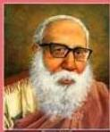
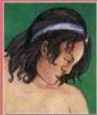
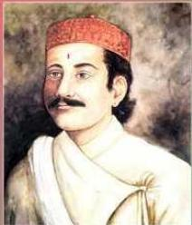
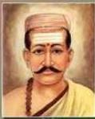
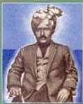
हाम्रा अग्रज साहित्यकार (भाषासेवीहरू)
नेपाल बहुभाषी देश हो। नेपालको संविधानले नेपालमा बोलिने सबै मातृभाषालाई राष्ट्रभाषाको मान्यता दिएको छ। नेपाली भाषा सरकारी कामकाजको भाषा हो। नेपाली भाषा सम्पर्कको भाषा पनि हो। प्राचीन नेपालमा किराँत, संस्कृत, पाली आदि भाषा र बाह्य, सिरिजङ्घा, देवनागरी, रञ्जना आदि लिपि विकसित हुँदै गएको पाइन्छ। उत्तरार्द्धमा संस्कृत भाषाको विकास अन्य भाषाको दाँजोमा अत्यधिक मात्रामा भएको पाइन्छ। जयस्थिति मल्लको उदय भएपछि मध्यकालमा नेवारी भाषा लिखित रूपमा सुरुआत भएको हो।
यस कालमा नेपालमा अन्य विभिन्न भाषाहरू अस्तित्वमा रहे पनि लिखित रूपमा तिनीहरूको वर्चस्व भेटिएको छैन। मुसलमान व्यापारीको प्रवेशपछि मध्यकालमा उर्दु
नेपाल परिचय/२३९
र फारसी भाषाको प्रयोग हुन थालेको पाइन्छ । दरबारमा संस्कृत, मैथिली, बङ्गाली, भोजपुरी, अवधी र पर्वते (नेपाली) भाषाका ज्ञाताहरू पनि थिए भन्ने कुरा इतिहासबाट प्रस्ट हुन्छ ।
७.१.१ नेपालमा बोलिने मुख्य भाषाहरू
| क्र. सं. | मातृभाषा | जनसङ्ख्या |
|---|---|---|
| १. | नेपाली | १३०८४४५७ |
| २. | मैथिली | ३२२२३८९ |
| ३. | भोजपुरी | १८२०७९५ |
| ४. | थारू | १७१४०९१ |
| ५. | तामाङ | १४२३०७५ |
| ६. | बञ्जिका | ११३३७६४ |
| ७. | अवधी | ८६४२७६ |
| ८. | नेपाल भाषा (नेवारी) | ८६३३८० |
| ९. | मगर धुत | ८१०३१५ |
| १०. | डोटेली | ४९४८६४ |
| ११. | उर्दु | ४१३७८५ |
| १२. | याक्थुङ/लिम्बू | ३५०४३६ |
| १३. | गुरुङ | ३२८०७४ |
| १४. | मगही | २३०११७ |
| १५. | बैतडेली | १५२६६६ |
| १६. | राई | १४४५१२ |
| १७. | अछामी | १४१४४४ |
| १८. | बान्तवा | १३८००३ |
| १९. | राजवंशी | १३०१६३ |
| २०. | शेर्पा | ११७८९६ |
| २१. | खस | ११७५११ |
| २२. | बभाडी | ९९६३१ |
| २३. | हिन्दी | ९८३९९ |
| २४. | मगर खाम | ९१७५३ |
| २५. | चाम्लिङ | ८९०३७ |
| --- | --- | --- |
| २६. | राना थारू | ७७७६६ |
| २७. | चेपाङ | ५८३९२ |
| २८. | बाजुरेली | ५६४८६ |
| २९. | सन्थाली | ५३६७७ |
| ३०. | दनुवार | ४९९९२ |
| ३१. | दार्चुलेली | ४५६४९ |
| ३२. | उरावै/उराउ | ३८८७३ |
| ३३. | कुलुङ | ३७९१२ |
| ३४. | अगिनका | ३५९५२ |
| ३५. | माभी | ३२९१७ |
| ३६. | सुनुवार | ३२७०८ |
| ३७. | थामी | २६८०५ |
| ३८. | गनगाई | २६२८१ |
| ३९. | थुलुङ | २४४०५ |
| ४०. | बाङ्ला | २३७७४ |
| ४१. | घले | २३०४९ |
| ४२. | सामपाङ | २१५९७ |
| ४३. | मारवाडी | २१३३३ |
| ४४. | डडेलधुरी | २१३०० |
| ४५. | धिमाल | २०५८३ |
| ४६. | ताजपुरिया | २०३४९ |
| ४७. | कुमाल | १८४३५ |
| ४८. | खालिङ | १६५१४ |
| ४९. | मुसलमान | १६२५२ |
| ५०. | वाम्बुले | १५२८५ |
२४०/नेपाल परिचय
| 29. | बाहिड़/बायुड | १४४४९ |
|---|---|---|
| 22. | याक्खा | १४२४१ |
| 23. | संस्कृत | १३९०६ |
| 24. | भुजेल | १३०८६ |
| 22. | भोटे | १२८९५ |
| 25. | दराई | १२१५६ |
| 29. | याम्फु/याम्फे | १०७४४ |
| 28. | नाछिरिड | ९९०६ |
| 29. | हयल्मो/योल्मो | ९६५८ |
| 30. | दुमी | ८६३८ |
| 31. | जुम्ली | ८३३८ |
| 32. | बोटे | ७६८७ |
| 33. | मेवाहाड | ७४२८ |
| 34. | पुमा | ६७६३ |
| 35. | पहरी | ५९४६ |
| 36. | आठपहरिया | ५५८० |
| 37. | दुइमाली | ५४०३ |
| 38. | जिरेल | ५१६७ |
| 39. | तिब्बेतन | ५०५३ |
| 40. | दैलेखी | ४९८९ |
| 41. | चुम/नुब्री | ४२८४ |
| 42. | छत्त्याल | ४२८२ |
| 43. | राजी | ४२४७ |
| 44. | थकाली | ४२२० |
| 45. | मेचे | ४२०३ |
| 46. | कोई | ४१५२ |
| 47. | लोहोरुड | ३८८४ |
| 48. | केवारत | ३४६९ |
| 49. | डोल्पाली | ३२४४ |
| 50. | दुने | ३१०० |
| --- | --- | --- |
| 51. | मुगाली | २८३४ |
| 52. | जेरो/जेरुड | २८१७ |
| 53. | कमरोड | २६१९ |
| 54. | छिलिड | २५६४ |
| 55. | लहोपा | २३४८ |
| 56. | लाप्चा | २२४० |
| 57. | मुन्डा/मुडियारी | २१०७ |
| 58. | मनाङ्गे | २०२२ |
| 59. | छिरिड | २०११ |
| 60. | दरा | १९९१ |
| 61. | तिलुड | १९६९ |
| 62. | साइकेतिक | १७८४ |
| 63. | ब्यासी | १७०६ |
| 64. | बालकुरा/बराम | १५३९ |
| 65. | बारागाउँ | १५३६ |
| 66. | सद्री | १३४७ |
| 67. | अंग्रेजी | १३२३ |
| 68. | मगर काइके | १२२५ |
| 69. | सोनाहा | ११८२ |
| 70. | हायू/भायू | ११३३ |
| 701. | किसान | १००४ |
| 702. | पन्जाबी | ८७१ |
| 703. | धुलेली | ७८६ |
| 704. | खाम्ची (राउटे) | ७४१ |
| 705. | लुडखिम | ७०२ |
| 706. | लोवा | ६२४ |
| 707. | कागते | ६११ |
| 708. | वालिड/वालुड | ५४५ |
नेपाल परिचय/२४१
| १०९. | नार-फू | ४२८ |
|---|---|---|
| ११०. | ल्होमी | ४१३ |
| १११. | टिछुरोड पोइके | ४१० |
| ११२. | कुमाली | ३९७ |
| ११३. | कोचे | ३३२ |
| ११४. | सिन्धी | २९१ |
| ११५. | फाडुदुवाली | २४७ |
| ११६. | बेलहरे | १७७ |
| ११७. | सुरेल | १७४ |
| ११८. | मलपाण्डे | १६१ |
| --- | --- | --- |
| ११९. | खरिया | १३२ |
| १२०. | सधानी | १२२ |
| १२१. | हरियान्वी | ११४ |
| १२२. | साम | १०६ |
| १२३. | बनकरिया | ८६ |
| १२४. | कुसुन्डा | २३ |
| १२५. | अन्य | ४२०१ |
| १२६. | नखुलेको | ३४६ |
स्रोत : राष्ट्रिय जनगणना २०७८
७.१.२ नेपाली भाषाको विकास र विस्तार
नेपाली भाषा भारोपेली भाषापरिवारको तत्सम वर्गभिन्न पन्ने भाषा हो। यसको सम्बन्ध आर्य इरानेली शाखाको आधुनिक आर्य भाषासँग रहेको पाइन्छ। नेपाली भाषा, आधुनिक आर्य भाषाहरूमध्ये एक हो। यो संस्कृत, प्राकृत र अपभ्रंश हुँदै विकसित भएको हो। प्राकृत तथा अपभ्रंशको कुन शाखाबाट नेपाली भाषाको जन्म भएको हो भन्ने सम्बन्धमा विद्वानहरू एकमत हुन सकेका छैनन्। नेपाली भाषालाई सरकारी कामकाजको भाषाको रूपमा लिइन्छ। यो भाषालाई सबैले बुभ्ने, कुराकानी गर्न सजिलै सकिने, सम्पर्क भाषा, शब्दावली भाषा, भाषा प्रयोगकर्ता, साहित्य, साहित्यकार र भाषासेवीका हिसाबले सबैभन्दा धनी भाषाको रूपमा लिने गरिएको पाइन्छ।
भाषिक पुरातात्विक विशेषता र राजनीतिक घटनाक्रमका आधारमा नेपाली भाषाको विकासक्रमलाई निम्नलिखित तीन कालमा बाँडिएको छ :
(क) प्राथमिक चरण
प्राचीन काल वि.सं. १०४० देखि १५४९ सालसम्म रहेको पाइन्छ। यसको प्रमाणका रूपमा वि.सं. १०३८ को दामुपालको अभिलेखलाई लिइन्छ। सप्तसिन्धु प्रदेशदेखि पूर्व हालको नेपालसम्म खसहरू फिजिएका थिए। भारतको मुगल साम्राज्य विस्तारका क्रममा सम्भावित आक्रमण प्रत्याक्रमणका लागि हुम्ला श्रीपालका राजा नागराजले वि.सं. १०४० मा एकीकरण गरी विशाल खस अधिराज्यको स्थापना गरेको इतिहास प्राप्त भएको छ। यिनी खस थिएनन्, तिब्बती थिए। एटूकिन्सन र राहुल साङ्कृत्यायनले दिएको विवरणअनुसार उनी स्रोड-चढ गम्पोका बाह्रै वंश हुन्। त्यसैले पनि यिनको मातृभाषा तिब्बती थियो भन्ने बुभिन्छ। अर्को कुरा उनका सन्तानको नाम चाप (यो नाम होइन, यो संस्कृतिमा राजा भन्ने अर्थको सिजाली शब्द हो), चापिल्ल (यो पनि नाम होइन, यो चापका छोरा
२४२/नेपाल परिचय
भन्ने अर्थको सिँजाली शब्द हो), क्रासिचल्ल (क्रासिको छोरो : यहाँ तिब्बती र खस शब्द जोडिएको देखिन्छ), क्राधिचल्ल (क्राधिको छोरो), क्राचल्ल (क्राको छोरो) रहेबाट पनि त्यो वंश तिब्बती वंश भएको स्पष्ट हुन्छ। तर, प्रजाहरूको जनसङ्ख्यामा खसहरू बढी भएकाले राजाहरू पनि विस्तारै खस जातिमा रूपान्तरित हुँदै गएको र स्थानीय खस प्रजाहरूकै भाषालाई राज्यभाषाका रूपमा प्रयोग गरेको देखिन्छ। त्यसवेला पूर्वेली खस राज्यका प्रमुख दुईओटा प्रान्त थिए : खसहरूको घना बसोबास भएको खसान र जाड वा भोटहरूको बसोबास बढी भएको जडान। यस खसान प्रान्तको राजधानीचाहिँ सिँजा (वर्तमान जुम्ला) थियो। यी सबै क्षेत्रमा एउटै भाषाको राजकीय प्रयोग भएकाले यसलाई सिँजाली भनेर चिन्न सकिन्छ। यसरी एकीकृत खस राज्यकालदेखि यस भाषाको उत्पत्ति भएको मानिएको हो, किनभने अरू आधुनिक भारतीय आर्यभाषाहरूको उत्पत्ति समय पनि यसै समयतिर मानिएको छ। यही भाषा पूर्वतिर पनि बढ्दै गण्डकी क्षेत्रसम्म आइपुग्यो। यसलाई पछि पर्वते भन्न थालियो। यस सिँजाली भाषाका प्राचीन नमुनाहरू विभिन्न अभिलेखमा पाइएका छन्। केही प्रमुख नमुना निम्नलिखित छन् :
- अशोकचल्लको दुल्लुको शिलालेख
- आदित्य मल्लको ताम्रपत्र
- गोरखाको ताघबाई गुम्बामा प्राप्त आदित्य मल्लको ताम्रपत्र
- पुण्य मल्लको ताम्रपत्र
(ख) मध्यकालीन चरण
अभय मल्लको साम्राज्य विघटनपछि (खस राज्यको विघटन) टुक्रेराज्यको स्थापनाले गर्दा नेपाली भाषाले पनि प्राचीन लक्षणहरू गुमाउँदै मध्यकालीन लक्षणहरू प्राप्त गर्न थाल्यो। वि.सं. १५५५ को धवकर्मठद्वारा लिखित कार्वोरिक विवोष शाहीको ताम्रपत्रको भाषा मध्यकालीन नेपाली भाषा लक्षणहरूको रूपमा देखा पन्यो।
नेपाली भाषा सोह्रै शताब्दीदेखि विस्तारित हुन थाल्यो। यस समयमा नेपाली भाषाभाषी क्रमैले पूर्वतिर फैलन थाले। यो क्रम पहाडी तथा तराईका भूभाग तथा दार्जिलिङ, आसाम हुँदै बर्मासम्म पुग्यो। यसरी फैलिने क्रममा स्वदेशी तथा विदेशी भाषाका शब्दहरूको आगमन नेपाली भाषामा हुन थाल्यो। यसै समयमा नेपाली भाषाले प्रशासनको माध्यम बन्ने अवसर पनि प्राप्त गन्यो। नेपालको एकीकरण अभियानसँगै नेपाली भाषाको व्यापक रूपमा प्रचारप्रसार तथा विस्तृतीकरणले यसको महत्व अभै बढेर गयो।
वि.सं. १५५५ को धवकर्मठद्वारा लिखित कार्वोरिक विवोष शाहीको भाषिक नमुनादेखि वि.सं. १९४८ को मोतीरामद्वारा लिखित भानुभक्तको जीवनचरित्रका बारेमा उल्लेख गरिएको भाषिक नमुनाका अतिरिक्त वि.सं. १८५५ को शक्तिबल्लभको “हास्यकदम्ब” को भाषा हेर्दा प्राचीनकालदेखि मध्यकालसम्म आइपुग्दा नेपाली भाषाले आफ्नो स्पष्ट रूप देखाइसकेको र काव्य र साहित्यतर्फ पनि यो भाषा लोकप्रिय भइसकेको पाइन्छ।
नेपाल परिचय/२४३
२४४/नेपाल परिचय
(ग) आधुनिक चरण
गोरखापत्रको (१९५८) प्रकाशनसँगै नेपाली भाषाको आधुनिक कालको थालनी भएको मानिन्छ। गोरखापत्रको प्रकाशनपछि नेपाली भाषाको विकासमा गोरखापत्रका साथ अन्य विभिन्न पत्रपत्रिकाहरूको पनि महत्वपूर्ण भूमिका रहेको पाइन्छ। सुन्दरी (१९६३), माधवी (१९६५) जस्ता पत्रपत्रिकाहरूले नेपाली भाषाको विकास र प्रचार-प्रसार गर्नमा दिएको योगदान अविस्मरणीय रहेको छ। राममणि आ.दी. को हलन्त बहिष्कार आन्दोलनलाई अगाडि बढाउन माधवी (१९६५) ले खेलेको भूमिका तथा स्वयम् राममणिकै योगदानलाई पनि बिर्सन सकिँदैन। भाषिक स्तरीकरणका लागि हलन्त बहिष्कार आन्दोलनले महत्वपूर्ण स्थान ओगेटेको छ। त्यसपछि चन्द्रिका व्याकरणको प्रकाशन तथा विभिन्न प्रतिभासम्पन्न कवि, लेखकहरूको साधनाबाट बिस्तारै आधुनिकतातर्फ ढल्कँदै गरेको पुष्टि हुन्छ। त्यसपछि नेपाली भाषालाई चोखो बनाउने कार्यमा शारदा (१९९१) पत्रिका तथा भार्रेवादी आन्दोलन (२०१३) को विशेष भूमिका रहेको छ। भार्रेवादी आन्दोलनले नेपाली भाषालाई जिउँदो, जाग्दो र भरिलो बनाउन ठेट नेपाली शब्दको प्रयोगमा विशेष जोड दिएको छ।
वर्तमान नेपाली भाषामा प्रकाशित विभिन्न साहित्यिक र साहित्येतर ग्रन्थहरू, शब्दकोश तथा व्याकरणको प्रकाशन तथा यससम्बन्धी भएका विविध कार्यले नेपाली भाषाको विकसित स्थितिको सङ्केत गरेको छ। त्यसका अतिरिक्त राष्ट्रभाषाका रूपमा संविधानले दिएको मान्यता, विदेशीहरूको नेपाली भाषाप्रतिको अभिरुचि, भारतीय संविधानको आठौँ अनुसूचीमा नेपाली भाषाले पाएको स्थानलाई दृष्टिगत गर्दा आधुनिक नेपाली भाषाको महत्व उच्च रहेको मानिन्छ।
आधुनिक कालमा शिक्षा, सञ्चार र प्रकाशनले नेपाली भाषाको लोकप्रियता बढ्दै गएको पाइन्छ। यसलाई महत्व दिइनु र विदेशीहरूले समेत यसतर्फ रुचि बढाउनुले यसको महत्व बढ्दै गएको तथ्य हाम्रा सामु स्पष्ट छ। यसरी नेपाली भाषाको वर्तमान रूपलाई स्थिर तथा मानक बनाउन विभिन्न क्षेत्रबाट भएको प्रयासलाई अस्वीकार गर्न सकिँदैन।
७.१.३ भाषा परिवार
भारोपेली परिवार
भारोपेली भाषा परिवार निम्नबमोजिम परिभाषित छ :
भारोपेली
सतम-अल्बानियाली, बाल्टेली, स्लामेली, आर्मेनेली र आर्य-इरानेली
केन्तुम
केल्टेली, जर्मनेली, प्रिसेली, इटालेली, तोखारेली र हिडेली
भारोपेली सम्पूर्ण भाषा परिवारहरूमध्येको सर्वाधिक समृद्ध भाषा परिवार हो। भारतीय उपमहाद्वीप र युरोप मुख्य क्षेत्र रहेकाले यसको नाम भारोपेली रहन गएको देखिन्छ। सबैभन्दा बढी जनसङ्ख्याले बोल्ने तथा युरोप र एशिया महादेशका विभिन्न भूभाग मुख्य क्षेत्र
रहे पनि संसारका सबैजसो क्षेत्रमा फैलिएको यस भाषा परिवारले साहित्य, सभ्यता, संस्कृति, ज्ञान, विज्ञान, राजनीति आदि हरेक क्षेत्रको नेतृत्व लिएको छ। भाषावैज्ञानिक दृष्टिले पनि यसको अध्ययनमा सर्वाधिक कार्य भएको छ। संस्कृत, अवेस्ता, ग्रिक, ल्याटिन, रूसी, जर्मन आदि विश्वका प्राचीन एवम् समृद्ध भाषाहरू यसै परिवारका मानिन्छन्।
भारोपेली भाषा परिवारको नामकरणका सम्बन्धमा विद्वानहरूबीच मतभेद पाइन्छ। यसलाई विद्वानहरूले इन्डो-जर्मनिक, इन्डो-युरोपियन, इन्डो-हिड्डेली, आर्य परिवार आदि भिन्न-भिन्न नाम दिएको देखिन्छ। जसले जे-जस्तो नामकरणको प्रस्ताव गरे पनि भारोपेली (इन्डो-युरोपियन) नामले नै लोकप्रियता हासिल गरेको छ।
भारोपेली भाषा परिवारको मूल थलो र मूल प्रयोक्ताका बारेमा कुनै ठोस निर्णय हुन सकेको देखिँदैन। यद्यपि इ.पू. ४५०० वर्षअघि भारोपेली समुदायका मानिसहरू एकै ठाउँमा बस्थे र एउटै भाषा बोल्थे भन्ने अनुमान गरिएको छ। मूल थलो अज्ञात रहे पनि भाषावैज्ञानिकहरूले तुलनात्मक अध्ययनका माध्यमबाट भारोपेलीको काल्पनिक मूल भाषाको निर्माण गरी तिनका प्रयोक्तालाई ‘विरोस’ नाम दिएको देखिन्छ। जसबाट भारोपेली भाषा परिवारका मूल प्रयोक्ताहरू ‘विरोस’ जाति थिए भन्ने निष्कर्ष निकालिएको पाइन्छ।
द्रविड परिवार
द्रविड जातिद्वारा बोलिने भाषालाई द्रविड भाषा परिवारअन्तर्गत राखिन्छ। मुख्यतः भारतको तमिलनाडु राज्य तथा मलेसिया, इन्डोनेसिया, श्रीलङ्का, बर्मालगायत पूर्वी र दक्षिण अफ्रिका आदि क्षेत्रमा यस परिवारका भाषाहरू बोल्ने गरिन्छ। इ.पू. १५०० भन्दा पहिलेदेखि नै बोलीचालीमा आएको यस परिवारको मुख्य भाषा तमिल हो। साहित्य, सभ्यता र संस्कृतिका दृष्टिले तमिल भाषा अत्यन्त समृद्ध देखिन्छ। तमिलबाहेक यस परिवारअन्तर्गत सेन्तमिल, मलयालम, कन्नाडा, तेलुगू, कोलामी आदि भाषा पर्दछन्।
द्रविड भाषा परिवारको मुख्य विशेषता अन्तःयोगात्मक हो। दुई वचन र तीन लिङको व्यवस्था पाइने यस परिवारका भाषामा कर्मवाच्यको व्यवस्था पाइँदैन। मूर्धन्य ध्वनिको प्राधान्य पाइने यस परिवारका भाषामा स्वरान्त शब्दको प्रयोग अधिक रहेको पाइन्छ। विभक्तिको काम प्रत्ययबाट चलाइनु यस परिवारका भाषाहरूको विशेषता हो। त्यसबाहेक पर्याप्त आगन्तुक शब्दको प्रयोग हुनु, लिङ निर्धारणका निमित्त आवश्यकताअनुसार नामिक शब्दसँग ‘पुरुष’ र ‘स्त्री’ वाचक शब्दहरू जोडिनुजस्ता विशेषता पनि द्रविड भाषा परिवारका विशेषताका रूपमा देखिन्छन्। नेपालमा यस परिवारको भाँगड (धाँगड) भाषा बोल्ने गरिन्छ।
भोट बर्मेली (चिनियाँ तिब्बती) परिवार
भाषिक वक्ताका दृष्टिले भारोपेली परिवारपछिको दोस्रो ठुलो भाषा परिवार हो, चिनियाँ तिब्बती। मुख्यतः चीन, तिब्बत र बर्मामा बोलिने यस परिवारका भाषाहरू बङ्गलादेश, थाइल्यान्ड, नेपाल, भुटान, भियतनाम आदि देशमा पनि बोलिन्छन्। यस परिवारलाई
नेपाल परिचय/२४५
विद्वान्हरूले भोट-बर्मेली र थाई-चिनियाँ गरी दुई वर्गमा विभाजन गरेको पाइन्छ । नेपालमा यस परिवारका तामाङ (मुर्मी), नेवारी, मगर, राई, किराँती, गुरुङ, लिम्बू, शेपा, चेपाङ, सुनुवार, थामी, धिमाल, तिब्बती, जिरेल आदि थुप्रै भाषा बोलिन्छन् ।
यस परिवारका प्रमुख भाषिक विशेषता निम्नानुसार छन् :
- अयोगात्मक भाषा
- एकाक्षरी भाषा
- स्थानबाट शब्दको अर्थ निर्धारण हुने भाषा
- तानका माध्यमबाट अर्थभेद हुने भाषा
- अनुनासिक ध्वनिको बाहुल्य भएको भाषा
- अलग-अलग शब्दका लागि अलग-अलग चिह्न हुने (वर्णमा अक्षर नहुने) भाषा
आग्नेय परिवार
आग्नेली भाषा परिवारलाई आग्नेसियाली/आग्नेय वा अस्टिक भाषा परिवार पनि भन्ने गरिन्छ । दक्षिण-पूर्व एसिया मुख्य थलो रहेको यस परिवारका भाषाहरू अन्नाम, कम्बोडिया, बर्मा, थाइल्यान्ड, भारत हुँदै निकोबार द्वीपसम्म फैलिएको देखिन्छ । नेपालमा पनि यस परिवारको सतार/सन्थाल भाषाको प्रयोग हुने गर्दछ । यस भाषा परिवारका मुख्य तीन शाखा देखिन्छन्- मुन्डा या कोल, मोन-खमेर र अन्नाम मुआङ । मोन-खमेर भाषा समूह यस परिवारको अपेक्षाकृत सशक्त देखिन्छ । यस भाषामा साहित्यको लेखन पनि भएको देखिन्छ । मोन-खमेरबाहेक अन्य भाषामा साहित्य-सिर्जना भएको पाइँदैन ।
यस परिवारका प्रमुख भाषिक विशेषता निम्नानुसार छन् :
- मुख्यतः अश्लिष्ट योगात्मकता
- विभक्तिको काम उपसर्गबाट लिइने भाषा
- लिङ्ग निर्धारणका निमित्त मूल लिङ्ग निर्धारक शब्दको प्रयोग गरिने भाषा (जस्तै- आँडिया कुल:बाघ, एड्गा कुल:बघिनी)
- तिनओटा वचन भएको भाषा
- पुरुषअनुसार क्रियामा रूपभेद नपाइने भाषा आदि ।
तालिका नं. ७.१
नेपालमा बोलिने विभिन्न भाषा परिवारअन्तर्गतका भाषाहरू
| क्र.सं | भाषा परिवार | भाषाहरू |
|---|---|---|
| १ | भारोपेली | नेपाली, मैथिली, भोजपुरी, अवधी, थारू, राजवंशी, दनुवारी माफी, बोटे, दरै, कुमाल, चुरेटी, मारवाडी, उर्दु |
२४६/नेपाल परिचय
| २ | चिनियाँ तिब्बती | नेवारी, गुरुङ, तामाङ, लिम्बू, तिब्बती, शेपा, जिरेल, कागते, ल्होमे, डोल्पा, छितुरिङ, ल्होके, लेप्चा, घले, थकाली, मनाङ, पूर्वी केके, छन्तेल, व्यासी, मगर, राजी, राउटे, पश्चिमी तामाङ, बुजा, दूरा, खाम, चेपाङ, थामी, भ्रमु, वायु (हायु), पहरी, धिमाल, मेचे, कुसुन्डा, राई, किराँती, सुनुवारी, पहारी |
|---|---|---|
| ३ | आग्नेय | सतार वा सन्थाली, अडिया |
| ४ | द्रविड | भाँगड वा धाँगड |
| ५ | अन्य | खालिङ, डोटेली, खस वा खस कुरा, उराउ |
स्रोत : नेपाल परिचय २०८१
७.१.४ केही भाषाभाषीका लिपिहरु
नेपालमा लेखन कार्यमा प्रयोग भएको सबैभन्दा पुरानो लिपि ब्राह्मी हो । लुम्बिनी र कपिलवस्तुको निम्लीहवामा पाइएका, इसापूर्व तेस्रो शताब्दीमा लेखिएका अशोक स्तम्भ अभिलेखहरू यही ब्राह्मी लिपिमा लेखिएका छन् । यो लिपि नेपालको मात्र नभई भारतीय उपमहाद्वीपकै पढ्न सकिएका लिपिमध्ये सबैभन्दा पुरानो लिपि हो । यो लिपि पाली, प्राकृत वा मगधी भाषा लेखनमा प्रयोग भएको छ । नेपालमा प्रयोग भएको दोस्रो पुरानो लिपि लिच्छवि लिपि हो । यो लिपि ब्राह्मी लिपिबाटै विकसित भएको हो । काठमाडौँको मालिगाउँमा पाइएको संवत् १०७ उल्लेख भएको महाराज जयवर्मनको सालिकको पादपीठमा लेखिएको अभिलेखमा पहिलो पटक यो लिपिको प्रयोग भएको छ । लिच्छवि राजा मानदेवदेखि जयदेव द्वितीयसम्मका सबै लिच्छवि राजाहरूको शासनकालमा राखिएका करिब २०० अभिलेख यही लिपिमा लेखिएका छन् । यो लिपि समकालीन भारतीय गुप्त लिपिसँग मिल्दोजुल्दो रहेको छ । यसको प्रयोग संस्कृत भाषा लेखनमा भएको छ । नेपालको लिच्छवि लिपिबाटै क्रमिक रूपमा विकास र परिवर्तन हुँदै दशौँ शताब्दीदेखि अर्थात् आरम्भिक मध्यकालदेखि काठमाडौँ उपत्यकामा नेवारी लिपि विकसित हुन पुग्यो । यसको विकासमा समकालीन बड्गाली लिपिको प्रभाव पनि रहेको विश्वास गरिन्छ । मध्यकालको उत्तरार्धीतर नेवारी लिपिका अनेकौँ स्वरूप विकसित भए । मध्यकालीन नेवारी लिपिका यी भिन्न स्वरूपहरू भुजिमोल लिपि, रञ्जना लिपि, गोलमोल लिपि, लितुमोल लिपि, पाँचुमोल लिपि तथा प्रचलित नेवारी लिपिका नामले परिचित रहेका छन् । यी सबैखाले नेवारी लिपिहरू आरम्भमा संस्कृत भाषा लेखनमा उपयोग भएका थिए भने पछिल्लो मध्यकालमा नेवारी भाषा लेखनमा प्रयोग भएका थिए ।
मध्यकालमा काठमाडौँ उपत्यकामा नेवारी लिपि र यसकै विभिन्न स्वरूपका लिपिहरूको
नेपाल परिचय/२४७
श्रीएको सरकार
शिक्षामात्रालय, पुरातत्वविभाग, राष्ट्रिय इतिहास अनुसन्धानशासकीय
अभिलेख-उपशासकीय प्रवृत्त गेको
लिपिविकास तालिका
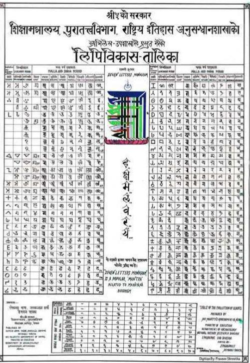
नेपालको लिपि विकास तालिका
विकास भइरहेको समयमा उपत्यकाबाहिर भने ब्राह्मी लिपिबाट विकसित भएका अन्य लिपिहरू प्रयोगमा रहेका थिए । यस समयमा कर्णाली प्रदेशतिर देवनागरी लिपिको प्रचलन
२४८/नेपाल परिचय
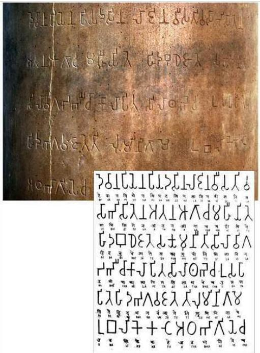
लुम्बिनीको अशोक स्तम्भमा भएको ब्राह्मी लिपिको अभिलेख
आरम्भ भएको थियो । यो लिपि ब्राह्मीबाटै गुप्त, शारदा, नागरी हुँदै देवनागरीको रूपमा विकसित भएको थियो र पश्चिम नेपालमा प्रयोग हुन पुगेको थियो । देवनागरी लिपिको प्रयोग नेपाली भाषा वा खस भाषा लेख्नमा मुख्य रूपले प्रयोग भए तापनि पछिल्लो समयमा यो लिपिको प्रयोग तराई क्षेत्रमा हिन्दी भाषा लेख्नमा पनि हुने गरेको छ । यो देवनागरी
नेपाल परिचय/२४९
लिपि नेपाल एकीकरणपछि काठमाडौँ उपत्यकामा पनि व्यापक प्रचलनमा आयो । तराई क्षेत्रमा मध्यकालमा मैथिली लिपिको पनि विकास भएको थियो । यो लिपि मैथिली भाषा लेखनमा अधिक प्रयोग भयो । हिमाली भेकमा तिब्बती लिपिको विकास भएको थियो, जसको प्रयोग तिब्बती भाषाको लेखनमा भयो । पूर्वी नेपालको किराँत प्रदेशमा किराँत लिपि वा सिरिजङ्गा लिपिको विकास भयो, जसको प्रयोग किराँत भाषा लेखनमा अधिक हुन पुग्यो । यीबाहेक नेपालका कतिपय अन्य जातजातिहरूका अलगै लिपिहरू पनि रहेको पाइएको छ । यसो भए तापनि वर्तमान समयमा नेपालमा बहुसङ्ख्यक नेपालीले प्रयोग गर्ने लिपि भने देवनागरी लिपि बन्न पुगेको छ ।
- नेपाली / हिन्दी : देवनागरी लिपि
- नेवारी लिपि : रञ्जना, ब्राह्मी, प्रचलित, भुर्जिमोल, पाँचुमोल, कुटिला आदि लिपि
- लिम्बू : सिरिजङ्गा लिपि
- उर्दु : अरबी लिपि
७.२ साहित्य
भाषाकै माध्यमबाट साहित्यको अभिव्यक्ति हुन्छ । साहित्य शब्दको क्षेत्र व्यापक वा विस्तृत रहेको छ । संस्कृतमा काव्यलाई नै साहित्य भनिएको पाइए तापनि वर्तमानमा चाहिँ काव्य र साहित्य अलग-अलग अस्तित्वमा रहेका पाइन्छन् । साहित्यले कथा, कविता, उपन्यास, निबन्ध, नाटक आदि सबैलाई समेट्छ । पूर्वीय विद्वान् भामहका अनुसार “शब्द र अर्थको सहभाव नै साहित्य हो” । नेपालमा प्रचलित प्रमुख भाषाहरूमा साहित्य सिर्जना भएको छ । यद्यपि त्यस्ता साहित्यको पहिचान हुन नसकेको अवस्था रहेको छ ।
नेपाली साहित्यको विकास र विस्तारलाई तीन कालमा विभाजन गरी अध्ययन गरिएको पाइन्छ :
(क) प्राथमिक काल : प्रारम्भदेखि वि.सं. १९३९ सम्म
सुरुदेखि मोतीराम भट्टको तथा शृङ्गारकाल सुरुआत हुनुपूर्वको समय आउँछ । यस अवधिमा निम्न तालिका नं. ७.२ मा उल्लिखित अभिलेखहरू (शिलापत्र, ताम्रपत्र, कनकपत्र आदि) र प्राचीन हस्तलिखित ग्रन्थहरूसमेतको समय पनि पर्दछ ।
तालिका नं. ७.२
भाषागत अभिलेखहरू
| समय | अभिलेख |
|---|---|
| वि.सं. १९४६ | संग्राम सिहले जारी गरेको जुम्लाको डुम्राकोटको अभिलेख |
| वि.सं. १३१२ | सिँजा (जुम्ला) का खस मल्ल राजा अशोक चल्लको शिलालेख |
२५०/नेपाल परिचय
| वि.सं. १३१७-१३२७ | जुम्लाका खस मल्ल राजा अक्षय मल्लको अभिलेख |
|---|---|
| वि.सं. १३३७ | अछामको अक्षय देवलमा प्राप्त अक्षय मल्लको अभिलेख |
| वि.सं. १३४४ | नाग मल्लको अभिलेख |
| वि.सं. १३७३ | दैलेखमा प्राप्त अभिलेख |
| वि.सं. १३७८ | गोरखामा प्राप्त आदित्य मल्लको अभिलेख |
| वि.सं. १३८५ | गोरखामा प्राप्त पुण्य मल्लको अभिलेख |
| वि.सं. १३९३ | पिउथर्पुमा प्राप्त पुण्य मल्लको अभिलेख |
| वि.सं. १३९४ | पुण्य मल्लको अभिलेख |
| वि.सं. १४१३ | पृथ्वी मल्लको जुम्लाको कनकपत्र |
| वि.सं. १४१४ | पृथ्वी मल्लको जुठाद्यो जोइसी लिखित ताम्रपत्र |
| वि.सं. १४१६ | निरयपालको अभिलेख |
| वि.सं. १४३३ | अभय मल्लको धर्मराज जोइसी लिखित अभिलेख |
| वि.सं. १४४८ | अभय मल्लको अभिलेख |
| वि.सं. १४७८ | बभ्राडमा प्राप्त सुमति बर्माको ताम्रपत्र |
| वि.सं. १५३७ | डोटीमा प्राप्त कीर्ति मल्लको ताम्रपत्र |
| वि.सं. १७०१ | पहाडी शाहीको ताम्रपत्र |
| वि.सं. १७०४ | जुम्लाका राजा बहादुर शाहको ताम्रपत्र |
| वि.सं. १७२७ | काठमाडौँको रानीपोखरीमा प्राप्त प्रताप मल्लको अभिलेख |
| वि.सं. १७६० | प्युठानका राजा पृथ्वीपतिको ताम्रपत्र |
स्रोत : नेपाल परिचय २०८१
नेपाली भाषा र साहित्यको अध्ययनका क्रममा प्राचीन हस्तलिखित ग्रन्थहरू पनि महत्वपूर्ण मानिन्छन् । १५औँ शताब्दीदेखि पाइएका यस्ता प्राचीन ग्रन्थहरू निकै महत्वपूर्ण मानिन्छन् । जस्तो : भास्वती, राजा गगनीराजको यात्रा, राम शाहको जीवनी, वाजपरीक्षा, ज्वरोत्पत्ति चिकित्सा, प्रायश्चित्त प्रदीप, नृपश्लोकी ग्रन्थ र औषधि रसायन ग्रन्थ आदि ।
नेपाल परिचय/२५१
नेपाली साहित्य लेखनको प्रारम्भ पृथ्वीनारायण शाहको नेपाल एकीकरणको अभियानसँगै भएको थियो । त्यसैले साहस, पराक्रम, वीरता र पुरुषार्थको कवितात्मक अभिव्यक्तिबाट नेपाली साहित्यको सुरुवात भएको पाइन्छ । सुवानन्द दासलाई नेपालका पहिला कवि मानिन्छ ।
(ख) माध्यमिक काल : वि.सं. १९४० देखि १९७४ सम्म
यो समय विलासी राणाहरूको चकचकीको युग भएकाले तत्कालीन साहित्यमा पनि यसको प्रभाव पर्न गई शृङ्गारिक काव्य तथा कविताहरूको सृजना भएको देखिन्छ । वीरगाथाबाट सुरु भएको नेपाली साहित्ययात्रा प्राथमिक कालमै भक्तिसाधनामा प्रवेश गरिसकेको थियो । वास्तवमा नेपाली साहित्यको माध्यमिक काललाई मोतीराम भट्टकाल भने पनि हुन्छ । अल्पायुमा मृत्यु भएका मोतीराम भट्टले छोटो समयमा नै नेपाली साहित्यमा ठुलो योगदान पुर्याएका थिए । उनले यस कालमा छापाखाना खोली धेरै पुस्तकहरू छपाएका थिए । वि.सं. १९४३ मा आफ्नै सम्पादनमा गोरखा भारत जीवन नामक साहित्यिक पत्रिका प्रकाशन गरेका थिए । उनले शृङ्गारिक कविताको नेतृत्व गरेका थिए ।
माध्यमिक कालमा शृङ्गारिक कविताहरू मात्र रचित्त भन्न मिल्दैन । राणाकालको त्यस चरमोत्कर्ष समयमा पनि उत्कृष्ट रचनाहरू रचित्तका थिए । यस कालमा मोतीरामलगायत शम्भुप्रसाद ढुङ्गोल, गोपीनाथ लोहनी, चक्रपाणि चालिसे, सोमनाथ सिम्धाल, गिरिशवल्लभ जोशी, रामप्रसाद सत्याल, पहलमान सिंह स्वौर आदि पर्दछन् । माध्यमिक काललाई पूर्वमध्य काल (भक्ति साहित्य) र उत्तरमध्य काल (शृङ्गार साहित्य) गरी दुई भागमा विभाजन गरिएको पाइन्छ । भक्ति धारामा पनि कृष्णभक्ति धारा, रामभक्ति धारा र निर्गुण भक्ति धारा गरी तीन प्रकारका साहित्य पाइन्छ ।
(ग) आधुनिक काल : वि.सं. १९७५ देखि हालसम्म
कविशिरोमणि लेखनाथ पौड्यालको आगमनसँगै नेपाली साहित्यमा आधुनिक कालको सुरुवात भएको मानिन्छ । उनको ‘ऋतुविचार’ काव्य (वि.सं. १९७३) मा प्रकाशित भएपछि नेपाली कवितामा आधुनिक कालको सुरुवात भएको मानिन्छ । बालकृष्ण समको ‘मुटुको व्यथा’ नाटक, विश्वेश्वरप्रसाद कोइरालाको ‘दोषी चरमा’ कथा, पुष्कर शमशेरको ‘लक्ष्यहीन’ एकाङ्की र बालकृष्ण समको ‘बोक्सी’लाई आधुनिक साहित्य मानिन्छ ।
नेपाली साहित्यले २००७ सालपछि तीव्र गति तथा उचाइ लिँदै आएको पाइन्छ । नेपाल राजकीय प्रज्ञा प्रतिष्ठानको स्थापना, मदन पुरस्कारको स्थापनालगायतका गतिविधिले पनि साहित्यको समृद्धिमा योगदान पुर्याएको पाइन्छ । नेपाली कवितामा थालिएको २०२० सालतिरको आयामेली आन्दोलनले नेपाली साहित्यलाई नयाँ मोड दिएको मानिन्छ । तीसको दशकपछि नेपाली कविता दुरुहताको भासबाट उद्दै सहजता र कलात्मकतातर्फ उन्मुख भएको पाइन्छ । यसपछि कविता फाँटमा नयाँनयाँ शैली, प्रयोग र धाराहरू देखा पर्न थाले ।
२५२/नेपाल परिचय
नेपाली साहित्य पछिल्लो दशकमा आएर उत्तरआधुनिक चिन्तनबाट प्रभावित भइरहेको छ। परम्परागत साहित्यिक विधाका स्वरूप र शैलीमा विघटन आएको छ। चिन्तन, शैली र विषयलाई अत्याधुनिक तरिकाले साहित्यमा प्रयोग गरिँदै आएको छ। यसरी नेपाली साहित्य आधुनिक कालसम्म आइपुन्दा धेरै प्रकारका साहित्यिक कृतिहरू प्रकाशित भइसकेको पाइन्छ।
तालिका नं. ७.३
नेपाली भाषाका केही साहित्यकार र तिनका प्रमुख कृतिहरू
| नाम/उपनाम | प्रकाशित पुस्तकहरू |
|---|---|
| भानुभक्त आचार्य (आदिकवि) | वधुशिक्षा, प्रश्नोत्तर, भक्तमाला, |
| मोतीराम भट्ट (युवा कवि, शृङ्गारिक कवि) | पञ्चक प्रपञ्च, पिकट्ट, गजेन्द्रमोक्ष, गफाष्टक, कनक सुन्दरी, प्रियदर्शिका |
| शम्भुप्रसाद दुझेल (आशुकवि) | शकुन्तला, वीरसिक्का |
| लेखनाथ पौड्याल (कविशिरोमणि) | ऋतुविचार, बुद्धिविनोद, तरुण तपसी, गङ्गागौरी, लक्ष्मीपूजा, गौरी गौरव |
| जयपृथ्वीबहादुर सिंह | अक्षरमाला, भूगोल विद्या, पदार्थतत्त्व, शिक्षा दर्पण, व्यवहारमाला, तत्त्व प्रशंसा |
| पहलमानसिंह स्वौर | अटलबहादुर, एक लाख रुपियाँको चोरी |
| सूर्यविक्रम ज्ञवाली | द्रव्य शाह, राम शाह, पृथ्वीनारायण शाह, अमरसिंह थापा, नेपाली सङ्क्षिप्त शब्दकोश |
| गुरुप्रसाद मैनाली | नासो |
| बालकृष्ण शमशेर राणा (बालकृष्ण सम, नाट्यसम्राट) | मुटुको व्यथा, प्रह्लाद, मुकुन्द इन्दिरा, अन्धवेग, भक्तभानुभक्त, म, प्रेमपिण्ड, अमरसिंह, माटोको ममता, भीमसेनको अन्त्य, मोतीराम, ऊ मरेकी छैन, नियमित आकस्मिकता |
| लक्ष्मीप्रसाद देवकाटा (महाकवि) | पहाडी पुकार, सुनको बिहान, छहरा, पुतली, मृत्युशैयाबाट, आकाश बोल्छ, मैना, रावण जटायु युद्ध, शाकुन्तल, सुलोचना, महाराणा प्रताप, पृथ्वीराज चौहान, मुनामदन, चम्पा, लक्ष्मी कथासङ्ग्रह, लक्ष्मी निबन्धसङ्ग्रह |
नेपाल परिचय/२५३
| भीमनिधि तिवारी | सहनशीला सुशीला, पुतली, चौतारा लक्ष्मीनारायण, माटोको माया, कविता कुञ्ज, विस्फोट |
|---|---|
| भवानीदास गुप्ता (भवानी भिक्षु) | गुनकेशरी, मैया साहेब, आवर्त, छाया, प्रकाश, आगत |
| चन्द्रप्रसाद प्रधान (हृदयचन्द्रसिंह प्रधान) | भूस्वर्ग, जुंगा, अफसोस, गड्गालालको चिता, स्वास्नीमान्छे, एक चिहान |
| सिद्धिचरण श्रेष्ठ (युगकवि) | कोपिला, मेरो प्रतिबिम्ब, कुहिरो र घाम, उर्वशी, आँसु, भीमसेन थापा |
| गोपालप्रसाद रिमाल | आमाको सपना, मसान, यो प्रेम ! |
| डायमनशमशेर राणा | वसन्ती, सेतो बाघ, सत्त्यास, अनिता, गृहप्रवेश |
| गोविन्दबहादुर मल्ल (गोठाले) | कथैकथा, प्रेम र मृत्यु, भुसको आगो, च्यातिएको पर्दा, भोको घर |
| शिवकुमार राई | फ्रान्टियर, खहरे, डाँक बड्गला, डाँफेचरी |
| गोविन्दप्रसाद प्रधान (कृष्णचंद्रसिंह प्रधान) | भञ्ज्याडाँनिरै, सालिक, आगतमा पाइला टेकेर |
| माधवप्रसाद घिमिरे (राष्ट्रकवि) | नवमञ्जरी, घामपानी, किन्नर किन्नरी, बाला लहरी, गौरी, राजेश्वरी, पापिनी आमा, राष्ट्रनिर्माता, शकुन्तला, मालतीमड्गाले, आफ्नै बाँसुरी आफ्नै गीत |
| इन्द्रबहादुर राई | विपना कतिपय, कथास्था, कठपुतलीको मन, आज रमिता छ |
| कमलमणि दीक्षित | यस्तो पनि, कालो अक्षर, कागतीको सिरप, बुकी सुन, सग्लो अक्षर |
| भूपेन्द्रमान शेरचन (भूपि शेरचन) | घुम्ने मेचमाथि अन्धो मान्छे, परिवर्तन, मैनबत्तीको शिखा |
| भैरव अर्याल | जयभुँडी, काउकुती, गलबन्दी, दश औतार |
| वानिरा गिरी | एउटा जिउँदो जड्गबहादुर, कारागार, निबन्ध |
२५४/नेपाल परिचय
| विष्णुकुमारी वाड्या (पारिजात) | शिरीषको फूल, मैले नजन्माएको छोरो, पखर्लभित्र र बाहिर, महताहीन, बैंसको मान्छे, अन्तमुखी, आकाङ्क्षा |
|---|---|
| भ्रमककुमारी घिमिरे | जीवन काँडा कि फूल, सड्कल्प, आफ्नै चिता अग्निशिखातिर, मान्छेभित्रका योद्धाहरू, अवसानपछिको आगमन, भ्रमक घिमिरेका कविताहरू |
| केदारमान सिंह (व्यथित) | सड्गम, प्रणव, आवाज, त्रिवेणी, मेरो सपनामा हाम्रो देश र हामी |
| विश्वेश्वरप्रसाद कोइराला | सुमिनमा, दोषी चस्मा, मोदी आइन, हिटलर र यहुदी, बुबा, आमा र छोरा, आफ्नो कथा |
| गणेशबहादुर थुलुङ (गणेश रसिक) | क्षितिजलाई छुन खोज्दा, जब सिस्नुहरू टेक्दै हिँडेँ |
| तुलसीप्रसाद जोशी (तुलसी दिवस) | नेपाली लोककथासङ्ग्रह, तुलसी दिवसका कविता |
| महेन्द्रवीरविक्रम शाहदेव (म.वी.वि. शाह) | उसेका लागि, फेरि उसेका लागि |
| तिलविक्रम नेम्वाङ (वैरागी काइला) | वैरागी काइलाका कविताहरू |
| वासुदेव लुइटेल (भूतको भिनाजु) | वैरस्यशतक, भूत छैन, काकाका कुरा, भीमसेन पाती |
| मेघराज नेपाल (मञ्जुल) | सम्भनाका पाइलाहरू, साँहिली मोरीलाई, गायक यात्री |
| मोदनाथ पौडेल (प्रश्नित) | भाँसीकी रानी, केही सांस्कृतिक निबन्धहरू, मानव महाकाव्य, आमाको आँसु, नारी बन्धन र मुक्ति |
| रामेश्वरप्रसाद शर्मा चालिसे (रमेश विकल) | सिंगारी बाख्रो, लाहुरी भैंसी, नयाँ सडकको गीत, विरानो देशमा, उर्मिला भाउजू, एउटा बुढो भ्वाइलिन : आशावरीको धुनमा |
नेपाल परिचय/२५५
| चेतमानसिंह भण्डारी (मनु ब्राजाकी) | भन्याड, अवमूल्यन, आकाशको फूल, तिम्मी स्वास्नी र म, लाटा, अन्नपूर्णको भोज |
|---|---|
| तारानाथ शर्मा भण्डारी (ताना शर्मा) | मेरो कथा, ओभेल पर्दा, सुली, भभल्लको, नेपालदेखि अमेरिकासम्म |
| रमोलादेवी शाह (छिन्नलता) | अन्तरभावना, अन्तर्तर, अन्तर्स्पन्दन |
| अच्छा राई (रसिक) | सप्तकोशी, भुँडी, लगन, दोभान |
| लोकनाथ पन्त (गुमानी पन्त) | रामनाम पञ्चाशिका, गड्गा शतक, कृष्णाष्टकम् |
| शम्भुप्रसाद दुइगोल (आशुकवि) | रत्नावली, शुकसागर, तोतामैनाको कथा |
| गोपाल पाण्डे (असीम) | राष्ट्रभाषा र साहित्य (विवेचना) |
| गोपीनाथ मैनाली (पथिक) | अवसाद अभिनयी, आँखाभरि रमिता मनभरि वेदना, युगकवि सिद्धिचरण : कृति र प्रवृत्ति विश्लेषण |
| फणिन्द्राज भट्टराई (खेताला) | छाँगो र छाया, नागफनी र स्वास्नीमान्छे, मूर्ति बोल्छ |
| विष्णुराज आत्रेय (लाटोसाथी) | हामीभित्रका म, ढाक्रे, कपिलवस्तु |
| मोहन राई (दुखुन) | जलन, प्रेम एउटा अभिशाप, मन्दाकिनी |
| चुडामणि बन्धु उपध्याय (बन्धु) | भाषाविज्ञान, अनुसन्धान प्रबन्धको रूप र शैली |
| शङ्कर कोइराला | खैरेनीघाट |
| नेत्रमणि सुवेदी (नेत्र एटम) | उपन्यास सिद्धान्त र नेपाली उपन्यास |
| मञ्जु तिवारी (काँचुली) | किरणका छालहरू, केही कथा केही परिधि |
| सत्यमोहन जोशी (सांस्कृतिक कवि) | हाम्रो लोक संस्कृति, नेपाली राष्ट्रिय मुद्रा, कर्णाली संस्कृति |
| भक्तबहादुर श्रेष्ठ (सरभक्त) | कवि प्रेमी र पागल, युद्ध उही ग्यास चेम्बरभित्र, इतिहासभित्रको इतिहास, इथर, तरुनी खेती, पागल बस्ती, समय त्रासदी |
२५६/नेपाल परिचय
| वासुदेव श्रेष्ठ (पासा) | फिलिज़ो, फर्केर हेर्दा, किसान, पर्दा, समाज |
|---|---|
| दयाराम श्रेष्ठ सम्भव | सन्दर्भ र मूल्याङ्कन, भारतीय नेपाली कथा, वीरकालीन कविता |
| युवराज मैनाली | मुर्दा बोल्यो, केही प्रतिभा केही प्रवृत्ति, भ्रष्टाचारको भाड़ |
| मोहनराज ढकाल शर्मा (मोराश) | च्याँखे धर्ना, रस चिनारी, कोर्रा, वैखरी |
| नारायण वाग्ले | पल्पसा क्याफे, मयूर टाइम्स |
| लीलाध्वज थापा | मन |
| शङ्कर लामिछाने | अब्स्ट्र्याक्ट चिन्तन : प्याज |
| दौलतविक्रम विष्ट | चपाइएका अनुहार, ज्योति ज्योति महाज्योति |
| अमर न्यौपाने | सेतो धरती |
| जगदीश घिमिरे | अन्तरमनको यात्रा, सकस |
| कर्ण शाक्य | सोच, खोज, मोज, म सक्छु र डोल्पो |
| ध्रुवचन्द्र गौतम | अलिखित, तथाकथित, त्यो एउटा कुरा, अँध्यारो द्वीपमा |
| कृष्ण धारावासी | भोला, गेस्टापो, टुँडाल, शरणार्थी |
| मदनमणि दीक्षित | माधवी, श्वेतकाली |
| शारदा शर्मा | ताप |
| महेशविक्रम शाह | छापामारको छोरो, सीपाहीकी स्वास्नी |
| राजन मुकारुङ | दमिनी भिर |
| तारालाल श्रेष्ठ | सपनाको समाधि |
| नयनराज पाण्डे | लू, उलार, सल्लीपिर, घामकिरी, यार |
| धनुषचन्द्र गोतामे | घामका पाइलाहरू, यहाँदेखि त्यहाँसम्म |
| केशवराज पिँडाली | एकादेशकी महारानी, बाँच्ने एउटा जिन्दगी |
| राजेश्वर देवकोटा | उत्सर्ग प्रेम |
नेपाल परिचय/२५७
| धुर्स्वाँ सायमी | गड्की |
|---|---|
| वासु शशी | फूल ओइलाएपछि |
| लीलबहादुर क्षेत्री | बसाई, बहमपुत्रको छेउछाउ |
| स्द्रराज पाण्डे | रूपमती |
| परशु प्रधान | सबै बिर्सिएका अनुहार, प्रतिनिधि कथाहरू |
| मनुजबाबु मिश्र | स्वप्न सम्मेलन, काँडाका फूलहरू |
| ईश्वर वल्लभ | आगोका फूलहरू हुन् आगोका फूलहरू हैनन् |
| मोहन कोइराला | ऋतु निमन्त्रण |
| दिनेश अधिकारी | अतिरिक्त अभिलेख, इन्द्रजात्रा |
| हरिवंश आचार्य | चिना हराएको मान्छे, हरिबहादुर |
| मदनकृष्ण श्रेष्ठ | महको म |
| कुन्दन शर्मा | एउटी छोरीको कथा, मेरा कविताहरू, यो मन |
| कृष्णप्रसाद पराजुली | कलिलो घाम |
| कालीप्रसाद रिजाल | के छ र जिन्दगी बिताइदिन्छु, यो प्रश्न कोसित सोधौं |
| क्षेत्रप्रताप अधिकारी | गामबेसीका गीत, नफूलेका फूलहरू |
| श्रवण मुकारुङ | जीवनको लक्ष्य |
| प्रह्लाद पोखरेल | जीवन्त यात्रा, सारथि |
| श्यामदास वैष्णव | नयाँ लहर |
| जगदीशशमशेर राणा | नरसिंह अवतार |
| वासुदेव त्रिपाठी | नवपल्लव |
| मुकुन्दशरण उपाध्याय | प्राकृत पोखरा |
| हरिभक्त कटुवाल | बदनाम मेरा यी आँखाहरू |
| कणाद महर्षि | भतेर र आँखाहरू |
| राजेन्द्र थापा | यसपालि त मनै फाट्यो |
२५८/नेपाल परिचय
| दैवज्ञराज न्यौपाने | सिर्जनाको लहर |
|---|---|
| कृष्ण प्रधान | सूर्य स्नान |
| भाउपन्थी | अद्यापि र अरू कथा |
| किशोर नेपाल | अर्कै प्रस्तर |
| अशोष मल्ल | अर्धविराम |
| पोषण पाण्डे | आँखीभूयाल, मानस |
| गोपाल पराजुली | दिशाहीन आकाश |
| कुमार ज्ञवाली | बन्दी जीवन, भत्केको गुँड |
| लोकेन्द्रबहादुर चन्द | विसर्जन, हिउँको तन्ना |
| अनिता तुलाधर | सूर्यग्रहण |
| विजयकुमार पाण्डे | खुसी |
| बुद्धिसागर | कर्णाली ब्लुज, फिरफिरे |
| सुरेश प्राञ्जली | तुइन |
स्रोत : नेपाल परिचय, २०७१
तालिका नं. ७.४ नेपालका अन्य केही भाषाका लेखक र पुस्तकहरू
| क्र. स. | लेखक | पुस्तक | भाषा |
|---|---|---|---|
| १ | केदारमान व्यथित | छ्वास: | नेपाल |
| २ | पूर्णबहादुर वैद्य | सरासु | नेपाल |
| ३ | प्रेमबहादुर कंसाकार | मातिनाया म्ये (प्रेमरसका लोकगीतहरूको सङ्कलन) | नेपाल |
| ४ | धुर्स्वाँ सायमी | गम्की (उपन्यास) | नेपाल |
| ५ | रामशेखर | नासफा: | नेपाल |
| ६ | तीर्थराज तुलाधार | आखे (अनुदित कथासङ्ग्रह ) | नेपाल |
| ७ | ईश्वरनन्द श्रेष्ठाचार्य | हनायक (उपन्यास) | नेपाल |
नेपाल परिचय/२५९
| 6 | दुर्लभलाल कर्मचार्य | थ: छ्यें (कथासड़यह) | नेपाल |
|---|---|---|---|
| 9 | भिक्षु सुदर्शन | अम्बपाली (नाटक) | नेपाल |
| १० | वासु शशी | ताचाप्वौया | नेपाल |
| ११ | उसमान | चित्रावली ( काव्यकृति) | अवधी |
| १२ | हेमलाल जोशी | खड़गसिद्धि (एकांकी सड़यह) | नेपाल |
| १३ | प्रेमबहादुर कंसाकार | न्हुगु पुखू (निबन्ध) | नेपाल |
| १४ | मणिकलाल श्रेष्ठ | समालोचनाया सिद्धान्त | नेपाल |
| १५ | कमलप्रसाद मल्ल | मुस: निबन्ध न: लिसवना (निबन्ध सड़कलन) | नेपाल |
| १६ | निष्ठानन्द बज्राचार्य | ललितविस्तारा (धार्मिक ग्रन्थ) | नेपाल |
| १७ | प्रज्ञान्द भिक्षु | धातुभेदनुपस्सना (दर्शन ग्रन्थ) | नेपाल |
| १८ | सिद्धिनरसिंह | कात्तिक नाच | नेपाल |
| १९ | कविकेशरी चितधर हृदय | ललितविस्तर | नेपाल |
| २० | अगस्टस कानरेडो (विदेशी) | हरिश्चन्द्रनृत्यम् (नाटक) | मैथिली |
| २१ | राजा जगज्ज्योतिमल्ल | हरगौरी विवाह (नाटक) | मैथिली |
| २२ | सरस राम | आनन्द - विजय नाटिका | मैथिली |
| २३ | नन्दिपति | कृष्ण केलिमालोक | मैथिली |
| २४ | विलाल | गौरी-स्वयंवर नाटिका, रुक्मणीहरण | मैथिली |
| २५ | कवि माथुर | कानन कन्यन, कृषक | मैथिली |
| २६ | रमाकान्त कापडी | व्यथा (खण्डकाव्य) | मैथिली |
| २७ | ब्रजकिशोर ठाकुर | अध्ययन औ विवेचना | मैथिली |
| २८ | ज्यातिरीश्वर | वर्ण-रत्नाकार (गद्यग्रन्थ) | मैथिली |
| २९ | महाकवि विद्यापति | देशील बयान | मैथिली |
| ३० | शान्ति चौधरी “थारू” | बिगड़ल तोहर थारू समाज हे, कन्यौति, बेटी, हमर दुधु (मेरी आमा) | थारू |
| ३१ | इमानसिंह चेम्जोड | किरौंत मुन्धुम खाहुन (शिक्षा) | लिम्बू |
२६०/नेपाल परिचय
| ३२ | रामप्रसाद राय | बहुआ और बहुरिया (उपन्यासरूपी नाटक) | धारू |
|---|---|---|---|
| ३३ | रविन्द्र तामाङ | मुग्लानगी एकाङ्की (नाटक), २०६७ | तामाङ |
| ३४ | केसाङ मोक्तान तामाङ | रेन्जिन दोर्जे (उपन्यास) | तामाङ |
| ३५ | जायसी | पदमावत (काव्यकृति) | अवधी |
स्रोत : नेपाल परिचय, २०७१
७.२.१ नेपालका प्रमुख साहित्यिक पुरस्कार
मदन पुरस्कार
स्व. ज. मदनशमशेर राणाको स्मृतिमा रानी जगदम्बाबाट स्थापित मदन पुरस्कारको घोषणा २०१२ साल असोज १० गते भएको थियो। पुरस्कार प्रदान गर्ने पहिलो घोषणा २०१३ सालमा भएको हो भने यसको वितरण २०१४ सालदेखि सुरु भएको हो। गुठीको निर्णयअनुसार प्रारम्भमा पुरस्कारको रकम ४ हजार रहेकोमा स्वर्ण वर्षको अवसरमा २०६१ सालदेखि यसको रकम २ लाख भएकोमा २०७५ सालदेखि पुरस्कार राशि ४ लाख रुपैयाँ बनाइएको छ। वि.सं. २०३१ र २०३३ सालमा यो पुरस्कार कसैलाई प्रदान गरिएको थिएन। मदन पुरस्कार एक वर्षभित्र नेपाली भाषामा प्रकाशित भएका उत्कृष्ट कृतिहरूमध्ये एकलाई प्रदान गरिने पुरस्कार हो।
तालिका नं. ७.५
मदन पुरस्कार पाउने केही कृति र खण्डहरु
| क्र.स | खण्डको नाम | कृति | साल |
|---|---|---|---|
| १ | सत्यमोहन जोशी, चित्तरञ्जन नेपाली र बलराम जोशी | ‘हाम्रो लोकसंस्कृति’ ‘जनरल भीमसेन थापा’ र ‘अधिकविभव स्थिरविद्युत् उत्पादक’ | २०१३ पहिलो पटक |
| २ | राजन मुकारुङ | दमिनी भिर | २०६९ |
| ३ | राधा पौडेल | खलत्रामा हमला | २०७० |
| ४ | विजय कुमार | खुसी | २०७१ |
| ५ | रामलाल जोशी | ऐना | २०७२ |
| ६ | घनश्याम कँडेल | धृतराष्ट्र | २०७३ |
| ७ | निलम कार्की ‘निहारिका’ | योगमाया | २०७४ |
नेपाल परिचय/२६१
| ८ | योगेश राज | रणहार | २०७५ |
|---|---|---|---|
| ९ | चन्द्रप्रकाश बानियाँ | महारानी | २०७६ |
| १० | भगिराज इड्नाम | लिम्बुवानको ऐतिहासिक दस्तावेज सङ्ग्रह संवत् १७१९-२०२० | २०७७ |
| ११ | डा. नवराज लम्साल | अगिन | २०७८ |
| १२ | विवेक ओभर | एँठन | २०७९ |
| १३ | मोहन मैनाली | मुकाम रणमैदान : नेपाल-अंग्रेज युद्धको बखान | २०८० |
स्रोत : मदन पुरस्कार गुठीको वेबसाइटबाट
जगदम्बाथी पुरस्कार
रानी जगदम्बाको स्वगारोहणपछि निजको पुण्य स्मृतिमा गुठीले २०४५ सालमा स्थापना गरेको १ लाख राशिको पुरस्कार जगदम्बाथी सोही सालबाट नै वितरण भएको हो र हाल यस पुरस्कारको रकम रु. ४ लाख प्रदान गर्ने गरिएको छ। २०४५ सालमा नारायणगोपाल गुरुवाचार्यले सर्वप्रथम यो पुरस्कार प्राप्त गरेका थिए।
जगदम्बाथी नेपाली भाषा, संस्कृति, साहित्यलगायतका विविध क्षेत्रमा उल्लेखनीय योगदान पुर्याउने व्यक्ति वा संस्थालाई प्रदान गरिने पुरस्कार हो।
तालिका नं. ७.६
जगदम्बाथी पुरस्कार पाउने केही कृति र खण्डहरु
| क्र.स | खण्डको नाम | साल |
|---|---|---|
| १ | नारायणगोपाल गुरुवाचार्य | २०४५ पहिलो पटक |
| २ | श्री लीलबहादुर क्षत्री | २०७२ |
| ३ | श्री दुर्गा बराल (वात्स्यायन) | २०७३ |
| ४ | श्री शान्तदास मानन्धर | २०७४ |
| ५ | वैरागी काईला (तिलविक्रम नेम्वाड) | २०७५ |
| ६ | शान्ति ठटाल | २०७६ |
| ७ | भैरवबहादुर थापा | २०७७ |
२६२/नेपाल परिचय
| ८ | दुर्गाप्रसाद श्रेष्ठ | २०७८ |
|---|---|---|
| ९ | टेकवीर मुखिया | २०७९ |
| १० | योगेन्द्रप्रसाद यादव | २०८० |
स्रोत : मदन पुरस्कार गुठीको वेबसाइटबाट
साभा पुरस्कार
साभा पुरस्कार साभा प्रकाशनद्वारा स्थापित पुरस्कार हो । यो पुरस्कार साभा प्रकाशनद्वारा वर्षभरि प्रकाशित विभिन्न विधाका पुस्तकहरूमध्ये सर्वोत्कृष्ट कृतिलाई प्रदान गरिन्छ । यस पुरस्कारको स्थापना वि.सं. २०२६ सालमा भएको हो । भूपी शेरचनद्वारा लिखित र साभा प्रकाशनले बजारमा ल्याएको ‘घुम्ने मेचमाथि अन्धो मान्छे’ कवितासङ्ग्रह साभा पुरस्कार (२०२६) प्राप्त गर्ने पहिलो कृति हो । यस पुरस्कारको राशि ५१ हजार रहेको छ ।
तालिका नं. ७.७
साभा पुरस्कार प्राप्त पुस्तकहरू
| घुम्ने मेचमाथि अन्धो मान्छे | २०२६ | भूपी शेरचन |
|---|---|---|
| एक बाटो अनेक मोड | २०२७ | विजय मल्ल |
| सम र समका कृति | २०२८ | तारानाथ शर्मा |
| भीमसेनको अन्त्य | २०२९ | बालकृष्ण सम |
| मोहन कोइरालाका कविता | २०३० | मोहन कोइराला |
| वैरागी काईलाका कविता | २०३१ | वैरागी काईला |
| आगत | २०३२ | भवानी भिक्षु |
| शाहकालीन कला र वास्तुकला | २०३३ | डा. जगदीशचन्द्र रेमी |
| प्रत्येक ठाउँ प्रत्येक मान्छे | २०३४ | पिटर जे. कार्थक |
| घामका पाइलाहरू | २०३५ | ध.च. गोतामे |
| देवकोटा | २०३६ | चूडामणि बन्धु |
| नेपाली उपन्यास र उपन्यासकार | २०३७ | कृष्णचन्द्रसिंह प्रधान |
| समान्तर | २०३८ | ईश्वरवल्लभ |
| हाम्रो समाज : एक अध्ययन | २०३९ | जनकलाल शर्मा |
| माधवी | २०३९ | मदनमणि दीक्षित |
| ऋतु निमन्त्रण | २०४० | मोहन कोइराला |
| सडकदेखि सडकसम्म | २०४१ | अशोष मल्ल |
| यहाँदेखि त्यहाँसम्म | २०४२ | ध.च. गोतामे |
नेपाल परिचय/२६३
| पूर्वकथा | २०४३ | राजेश्वर देवकोटा |
|---|---|---|
| सुवानन्ददासदेखि राजीवलोचनसम्म | २०४४ | गणेशबहादुर प्रसाई |
| विशुदाइ | २०४५ | किशोर पहाडी |
| तिम्मी स्वास्नी र म | २०४६ | मनु ब्राजाकी |
| पाइला : आगतमा टेकेर | २०४७ | कृष्णचन्द्रसिंह प्रधान |
| आँसु त्यसैत्यसै छचल्किन्छ | २०४८ | दौलतविक्रम विष्ट |
| पृथ्वीराज चौहान | २०४९ | लक्ष्मीप्रसाद देवकोटा |
| दिशाहीन आकाश | २०५० | गोपाल पराजुली |
| इन्द्रजात्रा | २०५१ | दिनेश अधिकारी |
| योजनगन्धा | २०५२ | विनोदप्रसाद धिताल |
| नफुलेका फूलहरू | २०५३ | क्षेत्रप्रताप अधिकारी |
| हिमालपारि हिमालवारि | २०५४ | माधव घिमिरे |
| मृत्यु-कविता | २०५५ | मञ्जुल |
| शब्दातीत शान्तनु | २०५६ | डा. वानीरा गिरी |
| राराको सौँराइ | २०५७ | पूर्णप्रकाश नेपाल ‘यात्री’ |
| चारु चर्चा | २०५८ | माधव घिमिरे |
| तथाकथित | २०५९ | ध्रुवचन्द्र गौतम |
| अन्धकार | २०६० | ध्रुव सापकोटा |
| छेउको वधशाला | २०६१ | विमल निभा |
| समानान्तर आकाश | २०६२ | पद्मावती सिंह |
| हरि अधिकारीका कविता | २०६३ | हरि अधिकारी |
| साहित्य र समाज | २०६४ | डा. ऋषिराज बराल |
| प्रेतकल्प | २०६५ | नारायण ढकाल |
| सङ्क्रमणको साहित्य र समकालीनता | २०६६ | पुरुषोत्तम सुवेदी |
| अश्वमेध यज्ञका घोडाहरू | २०६७ | दुबसु क्षत्री |
| मेरा जीवनका पानाहरू | २०६८ | गौरा प्रसाई |
| त्रासमा ईश्वर | २०६९ | ठाकुर बेलवासे |
| दोहाको सीधा उडान | २०७३ | जय छाड्छा |
| व्युत्पत्तिमूलक संस्कृत-नेपाली शब्दकोश | २०७८ | नीलमणि ढुङ्गाना |
स्रोत : साभा पुरस्कार २६४/नेपाल परिचय
प्रज्ञा पुरस्कार
प्रज्ञा पुरस्कार नेपाल प्रज्ञा-प्रतिष्ठानद्वारा स्थापित पुरस्कार हो। यस प्रतिष्ठानको स्थापना तत्कालीन नेपाल सरकारबाट ‘नेपाल एकेडेमी ऐन २०१४’ पारित गरी सोही ऐनअनुसार नेपाली साहित्य, कला एकेडेमीको नाममा भएको थियो। वि.सं. २०१४ मा गठित यो प्रतिष्ठान २०३१ मा पुन: अर्को ऐनद्वारा नेपाल राजकीय प्रज्ञा-प्रतिष्ठानमा परिणत भयो। नेपालमा गणतन्त्रको स्थापना भएपछि साबिक राजकीय प्रज्ञा-प्रतिष्ठानमा रहेका ललितकला र सङ्गीत, नाट्य विधाका निमित्त अलगै प्रज्ञा-प्रतिष्ठानको गठन गर्ने व्यवस्था भएअनुसार ती विधामा प्राज्ञिक कार्य गर्ने उत्तरदायित्वका साथ नेपाल प्रज्ञा-प्रतिष्ठान ऐन २०६४ द्वारा सङ्ठित नेपाल प्रज्ञा-प्रतिष्ठान हाल क्रियाशील रहेको छ। भाषा, साहित्य, संस्कृति, सामाजिक शास्त्र र दर्शनशास्त्र गरी नेपाल प्रज्ञा-प्रतिष्ठानमा प्रमुख पाँच विषय क्षेत्र रहेका छन्।
प्रज्ञा पुरस्कारहरू
प्रज्ञा-प्रतिष्ठानअन्तर्गत निम्नबमोजिम पुरस्कारहरू स्थापना गरिएका छन्। तिनको वितरण निश्चित प्रक्रिया पुर्याई प्राज्ञ परिषद्को सीफारिस र प्राज्ञसभाको अनुमोदनबाट गरिन्छ।
पृथ्वी प्रज्ञा पुरस्कार : नेपाल एकीकरणका नायक पृथ्वीनारायण शाहका नाममा स्थापित यो पुरस्कार हरेक चार वर्षमा एक जना सिर्जनशील प्रतिभा तथा विद्वान्लाई प्रदान गरिन्छ।
नेपाल प्रज्ञा भाषा पुरस्कार : नेपालका भाषासम्बन्धी योगदान पुर्याउने भाषाविद्लाई प्रत्येक दुई वर्षमा प्रदान गरिन्छ।
नेपाल प्रज्ञा सामाजिक शास्त्र, संस्कृति र दर्शन पुरस्कार : यो पुरस्कार हरेक दुई वर्षमा सामाजिक शास्त्र, संस्कृति र दर्शनमा योगदान पुर्याउने विद्वान्लाई प्रदान गरिन्छ।
नेपाल प्रज्ञा नेपाली साहित्य पुरस्कार : हरेक वर्ष कुनै सिर्जनशील नेपाली साहित्यकारलाई दिइन्छ।
नेपाल प्रज्ञा मातृभाषा साहित्य पुरस्कार : प्रत्येक वर्ष पहाडमा बोलिने मातृभाषाका साहित्यमा योगदान गर्ने विद्वान्लाई प्रदान गरिन्छ।
नेपाल प्रज्ञा मातृभाषा साहित्य पुरस्कार : प्रत्येक वर्ष तराईमा बोलिने मातृभाषाको साहित्यमा योगदान गर्ने विद्वान्लाई प्रदान गरिन्छ।
तालिका नं. ७.८
प्रज्ञा पुरस्कार प्राप्त गर्ने खण्डहरू
| १ | पृथ्वी प्रज्ञा पुरस्कार (२०७५-२०७८) | वाङ्मय शताब्दी पुरुष सत्यमोहन जोशी |
|---|---|---|
| २ | नेपाल प्रज्ञा सामाजिक शास्त्र/संस्कृति/दर्शन पुरस्कार (२०७६-२०७७) | प्रा.डा. त्रिरत्ननारायण मानन्धर |
नेपाल परिचय/२६५
| ३ | नेपाल प्रज्ञा भाषा पुरस्कार (२०७६-२०७७) | प्रा. डा. टड्डप्रसाद न्यौपाने |
|---|---|---|
| ४ | नेपाल प्रज्ञा नेपाली साहित्य पुरस्कार (२०७५) | मदन रेमी |
| ५ | नेपाल प्रज्ञा नेपाली साहित्य पुरस्कार (२०७६) | भागीरथी श्रेष्ठ |
| ६ | नेपाल प्रज्ञा मातृभाषा साहित्य पुरस्कार (२०७५) | अमर तुम्याहाड (पहाडी र हिमाली क्षेत्रमा बोलिने मातृभाषा साहित्यका लागि) |
| ७ | नेपाल प्रज्ञा मातृभाषा साहित्य पुरस्कार (२०७५) | अयोध्यानाथ चौधरी (तराई-मधेशमा बोलिने मातृभाषा साहित्यका लागि) |
| ८ | नेपाल प्रज्ञा मातृभाषा साहित्य पुरस्कार (२०७६) | अमृत योज्जन तामाड (पहाडी र हिमाली क्षेत्रमा बोलिने मातृभाषा साहित्यका लागि) |
| ९ | नेपाल प्रज्ञा मातृभाषा साहित्य पुरस्कार (२०७६) | अशोक थारू (तराई-मधेशमा बोलिने मातृभाषा साहित्यका लागि) |
| १० | नेपाल प्रज्ञा मातृभाषा साहित्य पुरस्कार (२०८०) | डा. योगेन्द्रमान प्रधानाज (पहाडी- हिमाली क्षेत्रबाट) |
| ११ | नेपाल प्रज्ञा मातृभाषा साहित्य पुरस्कार (२०८०) | बेचन उराँव (तराई-मधेश क्षेत्रबाट) |
| १२ | नेपाल प्रज्ञा मातृभाषा साहित्य पुरस्कार (२०८१) | गणेश वाम्बुले राई (पहाडी-हिमाली क्षेत्रबाट) |
| १३ | नेपाल प्रज्ञा मातृभाषा साहित्य पुरस्कार (२०८१) | कमलसिंह राना (तराई-मधेश क्षेत्रबाट) |
स्रोत : नेपाल प्रज्ञा प्रतिष्ठानको वेबसाइट
२६६/नेपाल परिचय
तालिका नं. ७.९ नेपालका केही प्रमुख पुरस्कारहरू
| क्र.सं. | पुरस्कार | राशि |
|---|---|---|
| १ | पृथ्वीप्रज्ञा पुरस्कार | ४ लाख |
| २ | मदन पुरस्कार | ४ लाख |
| ३ | जगदम्बाश्री पुरस्कार | ४ लाख |
| ४ | नेपाल विद्यापति भाषा साहित्य पुरस्कार | २ लाख |
| ५ | नेपाल विद्यापति अनुवाद पुरस्कार | २ लाख |
| ६ | आदिकवि भानुभक्त पुरस्कार | १,०१,१०१ |
| ७ | साभा पुरस्कार | ५१ हजार |
स्रोत : नेपाल प्रज्ञा प्रतिष्ठानको वेबसाइट
तालिका नं. ७.१० नेपाल सरकारबाट प्रदान हुने पुरस्कारहरू
| क्र.सं. | पुरस्कारको नाम | विधा | पुरस्कार राशि |
|---|---|---|---|
| १ | राष्ट्रिय प्रतिभा पुरस्कार | भाषा एवं साहित्य | एक लाख |
| भाषा एवं साहित्य | एक लाख | ||
| सङ्गीत नाट्य | एक लाख | ||
| संस्कृति | एक लाख | ||
| ललितकला | एक लाख | ||
| २ | प्रादेशिक प्रतिभा पुरस्कार | भाषा एवं साहित्य | पचास हजार |
| सङ्गीत नाट्य | पचास हजार | ||
| संस्कृति | पचास हजार | ||
| ललितकला | पचास हजार | ||
| ३ | महाकवि देवकोटा पुरस्कार | कविता | एक लाख |
| निबन्ध/समालोचना | एक लाख | ||
| आख्यान/नाटक | एक लाख | ||
| बालसाहित्य/लोकसाहित्य | एक लाख | ||
| साहित्य | एक लाख |
नेपाल परिचय/२६७
| ४ | भगत सर्वजित मानव मर्यादा राष्ट्रिय पुरस्कार | सीप, कला, शिक्षा-साहित्य, संस्कृति, लेखन तथा अध्ययन अनुसन्धान | एक लाख |
|---|---|---|---|
| समाजसुधार अभियान | एक लाख | ||
| मानव अधिकार | एक लाख | ||
| ५ | पुष्पलाल राष्ट्रिय पुरस्कार | राजनीतिक/ सैद्धान्तिक | एक लाख |
| इतिहास विषय | एक लाख | ||
| साहित्य, संस्कृति र विज्ञान | एक लाख | ||
| ६ | गोपालप्रसाद रिमाल राष्ट्रिय पुरस्कार | काव्य | एक लाख |
| नाटक | एक लाख | ||
| ७ | वि.पि. कोइराला राष्ट्रिय पुरस्कार | राजनीतिक दर्शन | दुई लाख |
| साहित्यिक | दुई लाख | ||
| ८ | इतिहास शिरोमणि बाबुराम आचार्य पुरस्कार | नेपाली इतिहासको खोजमूलक अध्ययन, अनुसन्धान तथा प्रचार प्रसार गर्ने व्यक्ति वा संस्था | दुई लाख |
| ९ | योगमाया राष्ट्रिय पुरस्कार | समाजसुधारका लागि महत्वपूर्ण योगदान गर्ने | एक लाख |
| १० | सत्यमोहन जोशी राष्ट्रिय पुरस्कार | नेपाल तथा नेपाली भाषा साहित्य, संस्कृति र इतिहास | एक लाख |
| ११ | युगकवि सिद्धिचरण श्रेष्ठ राष्ट्रिय पुरस्कार | नेपाल तथा नेपाली भाषा साहित्य | एक लाख |
| १२ | आदिकवि भानुभक्त राष्ट्रिय पुरस्कार | नेपाली भाषा साहित्य र कविता | एक लाख |
स्रोत : संस्कृत पर्यटन तथा नागरिक उद्देशन मन्त्रालय
७.३ चलचित्र
नेपालमा सर्वप्रथम २००६ सालमा नयाँ सडकस्थित जनसेवा हलमा जनताका निमित टिकट लगाई चलचित्र देखाउने कार्य भयो । तर यसमा देखाउने चलचित्र हिन्दी सिनेमा जगत्बाट
२६८/नेपाल परिचय
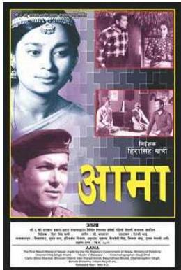
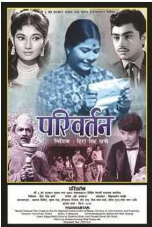
ल्याइन्थ्यो । नेपाली भाषाको पहिलो कथानक चलचित्र ‘सत्य हरिशचन्द्र’ हो जुन २००८ सालमा दार्जिलिङमा बस्ने केही नेपालीले निर्माण गरेका थिए । विगतमा प्रचार विभागले (हालको सूचना तथा प्रसारण विभाग) आफ्नै साधन र पुँजीमा वृत्तचित्र र समाचार चित्रहरूको निर्माण गर्ने क्रममै वि.सं. २०२१ सालमा कथानक चलचित्र ‘आमा’ निर्माण गर्यो । जुन सरकारबाट तयार भएको पहिलो नेपाली चलचित्र थियो । सोही विभागले ‘हिजो आज भोलि’ र ‘परिवर्तन’ नामका तिनओटा चलचित्रको निर्माण गर्यो । यसरी हाम्रो चलचित्रको इतिहासमा पहिलो अरुणोदय ल्याउने काम निश्चय नै यसै विभागबाट भएको हो ।
नेपाली चलचित्र क्षेत्रको बृहत्तर विकास र प्रवर्द्धन गर्दै नेपाली चलचित्र क्षेत्रको विकास गर्ने उद्देश्यले सरकारले चलचित्रकर्मीहरूकै माग र सुभावअनुसार २०५७ साल असार १६ गते चलचित्र विकास बोर्डको गठन गरेको हो । चलचित्र तथा श्रव्य-दृश्य विज्ञापनको निर्माण, वितरण, प्रदर्शनको इजाजत प्रदान गर्नु, इजाजत पत्रको नवीकरण गर्नु, च्यारिटी प्रदर्शनको अनुमति दिनु, विदेशमा नेपाली चलचित्रको छायाङ्कन, प्रदर्शन, मिक्सिङ गर्ने अनुमति र सीफारिस प्रदान गर्नु चलचित्र विकास बोर्डको नियमित कार्य हो । चलचित्रको जाँच सञ्चार तथा सूचना प्रविधि मन्त्रालयले गर्दछ । निजी क्षेत्रको संलग्नतामा चलचित्र निर्माणले द्रुत गति लिइरहेको छ । नेपालमा चलचित्र विकासलाई सहयोग पुर्याउन सुविधासम्पन्न चलचित्र नगर बनाउने सोच रहेको छ भने चलचित्रको बहुआयामिक विकास गर्न सरकारले चलचित्र नीति २०७१ कार्यान्वयनमा ल्याएको छ ।
नेपाल परिचय/२६९
२७०/नेपाल परिचय
७.४ कला
नेपाली कलालाई विशेषतः चार भागमा वर्गीकरण गरिएको पाइन्छ : वास्तुकला, चित्रकला, मूर्तिकला र काष्ठकला ।
७.४.१ नेपाली वास्तुकला र तिनका विशेषता
वास्तुशैली एवम् कलाको दृष्टिबाट नेपालमा पाइने मन्दिरहरूलाई निम्नलिखित तीन प्रकारमा विभक्त गर्न सकिन्छ :
तले शैली (प्यागोडा)
हिन्दुहरूले आस्थाका साथ पूजा गर्ने देवता रहने यस्ता मन्दिरमा भक्ति, पूजा र प्रदक्षिणापथको प्रयोजनलाई पूरा गर्ने उद्देश्यबाट मन्दिर वास्तुकलाका नमुनाका रूपमा निर्माण गरिएका हुन्छन् । यस्तो प्रयोजनका लागि विभिन्न स्वरूपका मन्दिरहरू निर्माण गर्ने चलन छ, जसमध्ये प्रमुख नेपाली तले शैली एक हो । तले शैलीका मन्दिरहरू त्यस्ता मन्दिर हुन्, जसमा अनेकन तला हुने गर्दछन् भने यिनमा एकपछि अर्को गरी तह-तह परेका अनेकौँ सद्भ्यामा छानाहरू पनि हुने गर्दछन् । तसर्थ यस्ता मन्दिरलाई Multiple Roofed Temple or Tiered Temple पनि भनिएको पाइन्छ ।
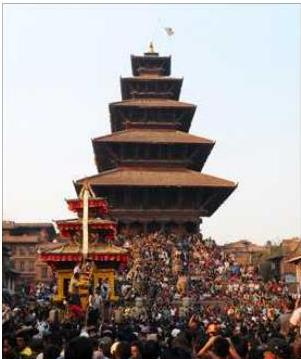
यस शैलीका विशेषता :
- मन्दिर प्राङ्गणमा कलात्मक वस्तुहरू
- विशेष प्रकारको गर्भगृह
- तहतह परेको छानो
- टुँडाल र तोरणको प्रयोग
- ईटा र काठको रुचिपूर्ण संयोजन
- मन्दिरबीचको भाग खोक्ने छाड्नु
- तले शैलीका मन्दिर ज्यादै अलङ्कृत हुने
तले शैलीका केही मन्दिर निम्नानुसार छन् :
- पशुपतिनाथ मन्दिर
- चौगुनारायण
- न्यातपोल
शिखर शैली
शिखर शैलीका मन्दिर विभिन्न स्वरूप र प्रकारका हुन सक्दछन्। सुलुत परेर माथि चुलिँदै गएका भलक्क हेर्दा शिखरजस्तो देखिने छाना नभएका मन्दिरको सम्पूर्ण रचना नै चुलिनाले गुम्बज जस्तो बनेको घामपानीबाट भित्र सुरक्षित हुने किसिमको निर्माणलाई वास्तुकलामा शिखर शैली भन्ने गरिन्छ। बाहिर वरिपरि प्रदक्षिणापथ बनाइएको हुन्छ भने भित्रपट्टि मूर्ति राखिन्छ। भारतमा गुप्त राजवंशीहरूको पालामा यस किसिमका मन्दिर बनाइन्थे। गुप्तहरूका समकालीन लिच्छवि राजाहरूको पालामा यस किसिमका मन्दिर बनेको पाईदैन तर मल्लकालमा सत्रौँ, अठारौँ शताब्दीमा यस्ता मन्दिरहरू निकै बने। यस किसिमका मन्दिर प्रस्तरका टुक्राहरूलाई लेपले जोडेर बनाइन्छ भने ईटनिर्मित मन्दिरहरूमा बाहिरबाट बज्रलेप गरी भरीबतास आदिबाट सुरक्षित गर्ने गरेको देखिन्छ। यस शैलीका मन्दिरहरू ब्रह्मा मन्दिर, पाटनको श्रीकृष्ण मन्दिर, पाटनको महाबौद्ध मन्दिर हुन्। यो शैलीका मन्दिर मुख्य गरी नागर, द्रविड र वेशर प्रकारका हुन्छन्।
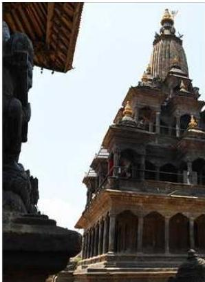
शिखर शैलीको कृष्ण मन्दिर, ललितपुर
यस शैलीका विशेषता
- सामान्यतया विभिन्न तहका पेटीमाथि शिखर मन्दिर स्थापना गर्नु
- मन्दिरअगाडि एउटा मात्र मण्डप निर्माण गर्नु
- प्रदक्षिणापथको व्यवस्था गर्नु
- बत्ती बाल्ने दियोहरू राख्नु
- गर्भगृहमा मन्दिरका मूल देवताको प्रतिमा स्थापना गर्नु
नेपाल परिचय/२७१
- धेरै तला निर्माण नगर्नु
- मन्दिरमा छानाको आवश्यकता महसुस नगरी शिखरलाई नै छानाको रूपमा प्रयोग गर्नु
- शिखर उँभोत्तर सानो हुँदै गएको बनाउनु
- विभिन्न रथको प्रयोग गर्नु
- उरुशूजको प्रयोग गर्नु
- त्रिरथ, पञ्चरथ र सप्तरथको कल्पना गर्नु
- आमलक, छत्र र गजुरको प्रयोग गर्नु
यस शैलीबाट बनेका केही मन्दिर :
- पशुपति प्राङ्गनको ब्रह्मा मन्दिर
- पाटनको महाबौद्ध मन्दिर
- पाटनको कृष्णमन्दिर
- भक्तपुरको वत्सलादेवी मन्दिर
- स्वयम्भूको प्रतापपुर र अनन्तपुर
- पाटनको च्यासिँदेग
- पाटन शङ्खमूलको जगत्नारायण मन्दिर
- ललितपुर बुजमतीको मच्चिङ्गनाथ मन्दिर
मिश्रित शैली
भारतको टिकमगढका राजा प्रतापसिंह र रानी वृषभानुकुमारीले वि.सं. १८९५ मा निर्माण कार्य सुरु गरेर १२ वर्ष लगाएर बनाएको जनकपुरको जानकी मन्दिर मिश्रित वास्तु शैलीको उदाहरण हो । राजपुत शैली र मुगल शैली अर्थात् शिखर र गुम्बज शैलीको विशिष्ट मिश्रित स्वरूप हो ।
७.४.२ नेपाली चित्रकला र तिनका विशेषता
मानवले भाषा र लिपिको आविष्कार गर्नुभन्दा अगाडिदेखि नै चित्रकलाको सुरुवात गरेको देखिन्छ । जुन समयमा मानवले भाषाको विकास गरेको थिएन, त्यो समयमा नै उसले चित्रका माध्यमबाट आफ्ना अनुभवहरू प्रस्तुत गरेको पाइन्छ । पाषाण कालमा युरोपका विभिन्न गुफामा निर्माण गरिएका चित्रहरूले यसै प्रसङ्गलाई सङ्केत गरेको पाइन्छ । संस्कृत साहित्यको युग र ऐतिहासिक कालमा समेत चित्रकला मानवको विचार अभिव्यक्तिको माध्यम भएको प्रमाण पाइएको छ ।
नेपालमा चित्रकलाको सुरुवात कहिले भयो भन्ने कुराको स्पष्ट जानकारी पाउन सकिएको छैन । यहाँको प्राग इतिहासको सही ढङ्गले खोज हुन अभसम्भ बाँकी नै भएको कुरा विभिन्न पुस्तकमा उल्लेख गरेको पाइन्छ ।
२७२/नेपाल परिचय
नेपालका चित्रहरूको विवरण प्रस्तुत गर्ने प्रथम अभिलेख्य प्रमाण धनबज्र बज्राचार्यद्वारा नेपालको पहिलो अभिलेख मानिएको, राजाको नाम र प्रसारण गरिएको तिथिमिति अङ्कित नगरिएको चाबहिलको अभिलेख हो (बज्राचार्य, २०३० : १) । उक्त अभिलेखमा “किन्नरी जातकका कुरा कुर्दिएको, अनेक थरी चित्रले सुहाएको यो चैत्य धेरै कालसम्म कष्ट गरी बनाइएको हो” भन्ने कुरा स्पष्टसँग लेखिएको छ ।
विश्वको चित्रकलाको इतिहास प्राचीन गुफायुग जस्तै पुरानो छ । युरोप (रोम, एथेन्स) तथा अफ्रिका (मिश्र) आदिका गुफाहरूमा चित्रकलाका प्रमाणहरू प्राप्त छन् । हिन्दु परम्परामा रामायण र महाभारतकालमा पनि चित्रकला विकसित थियो भन्ने कुरा राम वनवासपछि शोकाकुल दशरथलाई रानी कौशल्याले रामको चित्र देखाएको प्रसन्नले पुष्टि गर्दछ । पौराणिक ग्रन्थहरूमा पनि चित्रकलाको चर्चा गरिएको छ । नेपालमा चित्रकलाको सुरुवात भारतको चित्रकलाको प्रभावबाट भएको भन्ने विद्वानहरूको राय रहेको छ र लिच्छविकालीन दरबारहरू चित्रकलाले सुसज्जित हुन्थे भन्ने कुरा चिनियाँ यात्रुहरूले वर्णन गरेका छन् । चित्रहरू काठ, कपडा, ताडपत्र, कागज आदिमा अङ्कित हुने र यस्ता सामग्री छिटै नाश हुने हुँदा प्राचीन चित्रकलाका नमुनाहरू दुर्लभ छन् । तथापि प्राचीन तथा मध्यकालीन चित्रकलालाई निम्न ३ प्रकारले अध्ययन गर्न सकिन्छ :
ग्रन्थचित्र
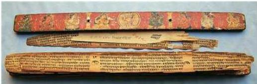
ग्रन्थचित्र, राष्ट्रिय अभिलेखालय
नौ सय वर्षसम्म पुराना प्राचीन बौद्ध ग्रन्थहरूमा चित्रित बौद्ध चित्रहरू नै नेपालका चित्रकलाका प्राचीन नमुना हुन् । बौद्ध ग्रन्थचित्रहरूको तुलनामा हिन्दु देवीदेवताका चित्रहरू न्यून मात्रामा पाइएका छन् । यस्ता ग्रन्थचित्रहरू भारतको गुप्तकालीन अजन्ता र एलोरा शैलीसँग मिल्दाजुल्दा छन् । ग्रन्थचित्रलाई दुई वर्गमा वर्गीकरण गरिएको छ :
- क) गाताचित्र
- ख) पात्रचित्र
ग्रन्थलाई सुरक्षित रूपमा ढाक्नका लागि तल र माथि राखिएका काठका चिल्ला फल्याकहरूमा भित्र, बाहिरी भागमा वा दुवैतर्फ कोरिएको चित्र गाताचित्र हुन् भने
नेपाल परिचय/२७३
मूलपाठको दायाँ-बायाँ बनेका वा मूल पाठलाई दायाँ-बायाँ पारी कथावस्तुसँग मिल्ने गरी बनाइएका चित्रहरू पात्रचित्र हुन् । ग्रन्थचित्रहरूमा पञ्चरक्षा, प्रज्ञापारमिता, हरिवंश पुराण आदि बौद्ध र शैव ग्रन्थहरूमा विविध रङ र आकार प्रकारका चित्रहरू अद्वित छन् ।
छापाखानाको आविष्कार हुनुभन्दा पहिले आफूलाई आवश्यक पर्ने पुस्तकहरू हातैले लेखेर तयार पार्ने गरिन्थ्यो । यस्तै ग्रन्थलाई हस्तलिखित ग्रन्थ भनिन्छ । यी ग्रन्थहरूमा लेखिएका विषयसँग सम्बन्धित चित्रहरू पनि ती ग्रन्थमा बनाउने चलन त्यस बेला थियो । यिनै चित्रहरूलाई ग्रन्थचित्र भनिन्छ र यी चित्रहरू ज्यादै सूक्ष्म रूपमा बन्ने हुँदा Miniature Painting भनेर पनि उल्लेख गर्ने गरिएको छ । हालसम्म प्राप्त नेपाली चित्रकलाका प्राचीन नमुनाहरूमा ग्रन्थचित्र नै पर्दछन् । मध्यकालभन्दा पहिलेका ग्रन्थचित्र भने पाइएका छैनन् । मध्यकालमा बनेका केही उत्कृष्ट ग्रन्थचित्रहरूमा पञ्चरक्षा, विष्णुधर्मशास्त्र, हरिवंश, हितोपदेश आदि उल्लेखनीय छन् । पूर्वमध्यकालतिरको पञ्चरक्षा नामक ग्रन्थको गातामा देवीहरूको भव्य चित्र बनाइएको छ, जसमा देवीहरू महिषासुर राक्षसलाई मार्न तल्लीन भएको देखाइएको छ । त्यस्तै, हरिवंश नामक ग्रन्थको गातामा कृष्णको जन्मदेखि उनले कांशको वध गरेसम्मको कथालाई चित्रण गरिएको छ । चित्रकथालाई बुभ्नाउन पानाहरूमा अनेक प्रकारका चित्रहरू बनाइएका छन् ।
ग्रन्थचित्रमा प्रयोग भएको विषयवस्तु, रङ तथा पहिरनका सम्बन्धमा कलाकारहरू विशेष संवेदनशील देखिन्छन् । कलाका अन्य विधामा जस्तो चित्रकलामा स्पष्ट रूपमा व्यक्तिको पहिचान गर्न कठिनाइ हुन सक्छ, त्यसैले तत्कालीन कलाकारहरूले रङकै माध्यमबाट देव र राक्षस स्वरूपमा भेद गर्नुपर्ने हुन्छ । यही स्थितिस्वरूप मध्यकालीन कलाकारहरूद्वारा कृष्णलाई स्वाभाविक निलो हरियो रङमा र कांश तथा उनका अनुचरहरूलाई पहेंलो रङमा देखाइएको छ । पहिरनमा पनि तत्कालीन भेषभूषा भल्काउने चेष्टा गरिएको पाइन्छ । जस्तो कि पुरुषहरूले छोटो धोती र स्त्रीहरूले घाँघर चोलो लगाउने तथा पुरुषहरूले मुसलमानी ढजले दाही पाल्ने आदि ।
भित्तेचित्र
नेपाली चित्रकलाका विविध पक्षमध्ये एक प्रमुख पक्षको रूपमा भित्तेचित्रको सुरुवातको निश्चित तिथिमिति नभए पनि यसको ऐतिहासिकता लिच्छविकालसम्म पुर्दछ । नेपालमा प्राप्त मध्यकालीन चित्रकलाका नमुनाहरूमा भित्ते चित्रकला पनि एक हो । नेपालमा पनि प्राचीन कालमा यो कला विकसित भएको हुन सक्छ तर हाल हामीसँग मल्लकालपूर्वका भित्ते चित्रकलाका नमुना प्राप्त भएका छैनन् । मध्यकालमा दरबार, मन्दिर र विहारहरूका भित्तेचित्र उत्कृष्ट कोटीका छन् । भक्तपुरको ५५ झ्याले दरबारमा रामायण, महाभारतका कथा, नलदमयन्ती कथा, कृष्ण जन्म र राशलीलाका आकर्षक चित्रहरूका साथै युद्धका लागि तत्पर शस्त्रास्त्रले सुसज्जित सैनिकहरूको चित्र अद्वित छ । जयप्रकाश मल्लद्वारा निर्मित जीवित देवी (कुमारी) को घर मानिने कुमारी घरमा रातो र सेतो मच्छिद्रनाथको चित्र, पचली भैरव, भीमसेन, हिरण्यकश्यपु वध, महाङ्काल, वज्रयोगिनी, गणेश आदि
२७४/नेपाल परिचय
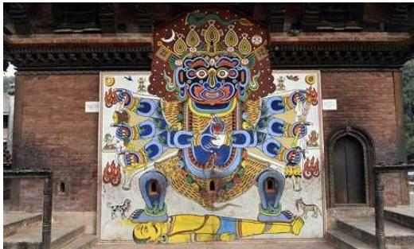
चण्डेश्वरी मन्दिरमा रहेको भैरवको चित्र, बनेपा
देवीदेवताको र मुगल भेषमा जयप्रकाश मल्लको ६ फिट अग्लो चित्र अङ्कित छ। कीर्तिपुरको बाघभैरवमा र हनुमानढोकामा समेत मल्लकालीन चित्रकलाका नमुना देख्न सकिन्छ। भक्तपुरको तलेजु मन्दिरमा पन्ध्रौं शताब्दीमा निर्मित कुणाले मुरली बजाउँदै गरेको र राधाले झ्याली बजाउँदै गरेको चित्र अति रमणीय देखिन्छ। समष्टि रूपमा प्राचीन तथा मध्यकालीन चित्रकलामा धार्मिक सहिष्णुता, तान्त्रिक शैलीको बढ्दो प्रभाव, मुगल शैलीको प्रयोग तथा अनुसरण, विविध रङ तथा रोगनको प्रयोग आदि प्रमुख विशेषता पाइन्छ।
पौभाचित्र
विशेष प्रविधिका साथ कपडामा बनाइएको पौभाचित्र पट र मण्डल गरी दुई छन्। ‘पट’ विधिमा देवीदेवताका चित्रलाई बीचमा राखी अन्य सहायक देवीदेवताहरूलाई वरिपरि राखिन्छ भने ‘मण्डल’ विधिमा क्यानभासको बीच खण्डमा तान्त्रिक वा साङ्केतिक चिन्हहरू
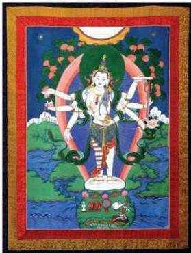
नेपाल परिचय/२७५
राखिन्छन् । पौभाचित्रहरू नेपाली चित्रकलाको विशिष्ट शैलीको रूपमा रहेका छन् । यो चित्रकलालाई केही विद्वानहरूले नेपालमा नै उत्पत्ति भएको हो भनेका छन् भने लैनसिंह वाङ्देलका अनुसार “कपडामा धार्मिक कुराहरू लेख्ने तिब्बती परम्परा नै नेपालमा आयात गरिएको हो ।” पछि नेपालमा निर्मित बौद्ध परम्पराका पौभाचित्रहरूको चीनमा अत्यधिक माग भएकाले तत्पश्चात् पौभाचित्रहरू व्यावसायिक रूपमा निर्माण हुँदै आएका छन् । बाङ्देलका अनुसार अमेरिकाको काउन्टी म्युजियममा रहेका तेह्रौं शताब्दीको ‘अमिताभ’ पौभाचित्र नेपालको प्राचीन पौभाचित्र हो । तेह्रौं शताब्दीकै ‘रत्नसम्भव’ र नेपाल संवत् ७२० को ‘विष्णुमण्डल’ नेपाल संवत् ५५६ तिरको ‘अमोघपास अवलोकितेश्वर’ पौभाचित्रहरू उल्लेखनीय छन् । धार्मिक सहिष्णुतामा आधारित हुनु, धार्मिक परम्पराका पौभाचित्र हिन्दु र बौद्ध दुवैमा प्राप्त हुनु, पृष्ठ भागमा प्राकृतिक दृश्यहरूको चित्रण हुनु नेपाली पौभाचित्रका विशेषता मानिन्छन् । सोह्रौं शताब्दीदेखि नेपाली पौभाचित्रमा तान्त्रिक शैलीको प्रवेश भई सोहीअनुरूप देवीदेवताहरूको चित्र अड्कित गर्ने परिपाटी चल्यो । १८औँ शताब्दीपछिका पौभाचित्रमा ठूला आँखा, उच्च नाक, लाम्चिला मुखाकृति चित्रित भएकाले यस्तो शैलीलाई भारतीय प्रभाव भन्ने गरिन्छ ।
७.४.३ नेपाली मूर्तिकला र तिनका विशेषता
नेपालको ऐतिहासिक कालविभाजनअनुसार नै यहाँको कलालाई पनि प्राचीन, मध्यकालीन र शाहकालीन गरी तीन भागमा वर्गीकरण गर्न सकिन्छ । नेपालको प्राचीन कलालाई पनि शैलीका आधारमा तीन भागमा वर्गीकरण गरिएको पाइन्छ- प्रारम्भिक काल, लिच्छवि काल र मध्यकालीन काल । नेपालको प्राचीन मूर्तिकलाको अध्ययनसमेत यसै वर्गीकरणअनुरूप गर्न सकिन्छ ।
प्रारम्भिक कालको मूर्तिकला
नेपालको प्रारम्भिक मूर्तिकलामा काठमाडौँ उपत्यकाका केही प्राचीन प्रस्तर मूर्तिहरूको शैली, परम्परा र लक्षणमा मथुरा कुषाण कलाशैलीको प्रभाव परेको पाइन्छ । भारतको कुषाणकाल इसापूर्व प्रथम शताब्दीदेखि इस्वीको तेस्रो शताब्दीबीचको मानिने हुनाले त्यही शैलीको आधारमा नेपालमा पनि मूर्तिकला सुरु भएको देखिन्छ ।
पहिलो किराँत राजा यलम्बर ‘किराँतेश्वर’ले नै किराँतेश्वर महादेव (गौरीघाट श्लेष्मान्तक वनमा) स्थापना गरेको अनुमान गरिन्छ । आर्यघाटको मृगेश्वर स्थानभित्रको सेतो खैरो कडा प्रस्तर मूर्ति विरुपाक्ष (इ.पू. सातौँ-आठौँ शताब्दी), किराँत राजमाता आदि किराँतकालका प्रसिद्ध मूर्तिहरू हुन् । हाँडीगाउँ सत्यनारायण मन्दिर निकटस्थ पुरुष मूर्तिलाई अन्तिम किराँत शैलीको नमुना मानिन्छ । मनुष्यकार प्राचीन प्रस्तर मूर्तिमा विरुपाक्ष सुन्दर र उत्कृष्ट छ र यसको कथा युनानी इडिपसको कथासँग मिल्दोजुल्दो छ । तिलौराकोट (तराई) वनजरहीमा प्राप्त नारी शिर मृणमय (टेराकोटा) इसापूर्व तृतीय शताब्दीको मानिन्छ । यहाँको माता र शिशु इ.पू. द्वितीय शताब्दीको हो । यस युगमा प्रचलित केही मूर्तिहरू- व्यासलहिटिकी गजलक्ष्मी, हौगलबहाल पाटनकी मातृकय, सिकुवही पाटनको उमामहेश्वर र राष्ट्रिय
२७६/नेपाल परिचय
सङ्ग्रहालयको कुमारसम्भव शिलाफलक आदि रहेका थिए । यस युगको मूर्तिकलाका मुख्य विशेषताहरू :
- अनौठो वरदमुद्रा प्रस्तुत गर्नु
- छड्के पटुकाको प्रयोग
- लुगाका मुजालाई बुझकारमा देखाउनु
- साधारण र गोलो आकारको प्रभामण्डल देखाउनु
- यज्ञोपवितको अभाव
- अलङ्कृत रूपमा केश विन्यास गर्नु
- काँधसम्म आउने ठुल्ठुला कर्ण कुण्डलको प्रयोग गर्नु
- गोडामा ठुल्ठुला कल्लीको प्रयोग हुनु
- सूक्ष्म कलाकारिताको अभाव हुनु
लिच्छविकालको मूर्तिकला
लिच्छविकालीन मूर्तिकला सुसंस्कृत, चिल्ला, मिहिन, भावभङ्गीपूर्ण एवम् मौलिकता भएको पाइन्छ । गुप्तकालीन कलाको छाप परे तापनि धार्मिक विषयवस्तुमा सुन्दर र गतिशील मूर्तिहरू बनेका पाइन्छन् । साना भए तापनि छिनुको कुँदाइद्वारा मूर्तिहरू बनेको पाइन्छ । यस युगमा प्रचलित केही मूर्तिहरू- विष्णुविक्रान्त मूर्तिहरू, राष्ट्रिय सङ्ग्रहालयकी पद्धहस्ता लक्ष्मी मूर्ति, आर्यघाटको विरूपाक्ष मूर्ति, हनुमानढोकाको कालियदमन मूर्ति (हनुमानढोका, काठमाडौँ), विश्वरूप (चाँगु), बोधिसत्व (गणबहाल) जस्ता मूर्ति उत्कृष्ट भएकाले यो युग कलामा सुवर्ण युग नै भएको मानिन्छ । यस कालका बौद्ध र बोधिसत्वका पर्याप्त मूर्तिहरू भेटिन्छन् । ढोकाबहाल चैत्यको पद्धपाणि लोकेश्वर मूर्ति, बाङ्गेमुढाको स्थानक बुद्धमूर्ति, बुढानीलकण्ठको जलाशय नारायण मूर्ति, चण्डोलको धूमवराह मूर्ति, राष्ट्रिय सङ्ग्रहालयको उमामहेश्वर मूर्ति आदि प्रसिद्ध छन् । शक्ति र ललितमय मूर्तिको निर्माण प्राचीनकालमा प्रारम्भ भइसकेको थियो । स्त्रीरूपी शक्तिपूजा प्राचीनकालदेखि नै विद्यमान भएको प्रमाण लिच्छवि राजा मानदेवको समय (इसाको पाँचौँ शताब्दी) मा स्थापना
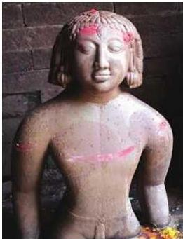
नेपाल परिचय/२७७
२७८/नेपाल परिचय
गरिएका विजेश्वरी, अष्टदशभूज धारणी पलाञ्चोक भगवती (काभ्रे) लाई लिन सकिन्छ। यो मूर्ति कलापूर्ण र बेजोड छ। इसाको सातौँ शताब्दीपछि स्त्रीलाई मूर्तिकलाको व्यापक विषय बनाई न:घलटोलको पार्वती, दक्षिणकाली (फर्पिड), कङ्गेश्वरी (विष्णुमतीनिकट) र वनकाली (धौपाटन) जस्ता देवीका मूर्तिहरू तान्त्रिक ढाँचामा निर्माण भए। यस समयमा मूर्तिहरूले अत्यन्त परिष्कृत उत्कृष्ट अवस्था प्राप्त गरिसकेको पाइन्छ। आठौँ शताब्दीपछि भारतको उत्तर विहार शैलीको प्रभाव परेको पाइन्छ।
लिच्छविकालको मूर्तिकलाका विशेषता :
- आकर्षक मुखाकृतिका मूर्तिहरू निर्माण हुनु
- विशेष प्रकारको ढुङ्गाको चयन गर्नु
- आइडिगिक अनुपातको मेल हुनु
- नारी मूर्तिमा लचकताको गुण विद्यमान रहनु
- केश विन्यास अलङ्कृत ढङ्गामा हुनु
- ज्यादै आकर्षक नारी मूर्तिहरू हुनु
- पारदर्शी कपडाको प्रयोग गर्नु
- साधा र गोलो प्रभामण्डल निर्माण गर्नु
मध्यकालको मूर्तिकला
मध्यकालीन नेपालका काष्ठ, धातु र प्रस्तर मूर्तिकला समृद्ध थिए। ताम्र र लोहलेपद्वारा मूर्तिहरू प्रज्वलित र टिकाउ पारिन्थे। कुशल कालीगढले कुँदेका मूर्तिहरू विशेषत: काठमाडौँ उपत्यकामा भेटिन्छ। नेपाली मूर्तिकला सामान्यतया प्रस्तर, काष्ठ र धातु गरी तीन प्रकारका मूर्तिकला अत्यधिक विकसित भएका छन्। मृणमय (टेराकोटा) मूर्तिहरू पनि थोरै विकसित भए पनि अत्यन्त सुन्दर छन्। यस युगका कोटालटोल हाँडीगाउँको उमामहेश्वर मूर्ति, क्वाबहालको उमामहेश्वर मूर्ति, थापाहिटीको सूर्यमूर्ति, बनेपाको सूर्यमूर्ति,
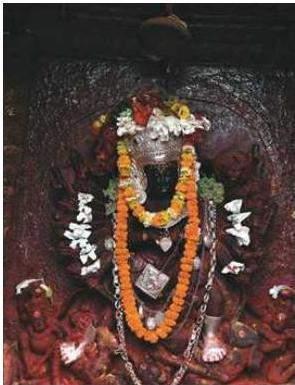
चौगुनारायणको श्रीधर विष्णुमूर्ति, चौगुको नरसिंह मूर्ति, देउपाटनको चतुर्मुख लिङ्ग, पाटन कुम्भेश्वरको विष्णुव्यूह, राष्ट्रिय सङ्ग्रहालयको विष्णुमूर्ति आदि प्रसिद्ध छन् । तेह्रौ-चौधौ शताब्दीको नृत्येश्वर मूर्ति (राष्ट्रिय सङ्ग्रहालय), स्थिति मल्लको समय वि.सं. १४३९ (ई.सं १३८२) मा पशुपतिको मनुष्याकार चतुर्मुखी मूर्ति पनि प्रसिद्ध छन् ।
मध्यकालका मूर्तिकलाका विशेषता :
- फ्रोस्रो कमसल ढुङ्गाको छनोट
- लाम्चो र सानो मुखाकृति निर्माण गर्नु
- अत्यधिक गरगहनाको प्रयोग गर्नु
- अलङ्कृत प्रभामण्डल निर्माण गर्नु
- मूर्तिलाई हावादारी बनाउनु
- विशेष प्रकारको मुकुटको प्रयोग गर्नु
- आङ्गिक अनुपातको मेल नहुनु
- पादपीठमा दोहोरो पद्यपीठ देखाउनु
प्रस्तरका मूर्ति
पत्थर कलामा नेपाल निकै माथि थियो । पत्थरको छनोट, विषयवस्तुको छनोट र कालीगढी कुशलताले नेपाली पत्थर कलामा सजीवता र सुन्दरता दिएको पाइन्छ । स्थूल र सूक्ष्म प्रकारका ढुङ्गे मूर्तिहरू मध्यकालमा प्रशस्त तयार भएको पाइन्छ । दशौ शताब्दीतिरको हाँडीगाउँ कोटाल टोलको उमामहेश्वरको मूर्ति, ने.सं. १०७ को पाटनको क्वावहाको उमामहेश्वरको मूर्ति, सन् १०६५ को पाटन थापाहिटीको सूर्य मूर्ति (हाल पाटन सङ्ग्रहालयमा छ), ने.सं. ५१४ मा बनेपाको सूर्य मूर्ति, दशौ शताब्दीतिरको चौगुनारायण प्राङ्गणको श्रीधर विष्णुको मूर्ति, चौधौ शताब्दीतिरको पनौतीको सूर्य मूर्ति, तेस्रो शताब्दीतिरको चौगुको नरसिंहको मूर्ति, चौधौ शताब्दीतिरको राष्ट्रिय सङ्ग्रहालयको विष्णुको मूर्ति आदि पूर्वमध्यकालका उत्कृष्ट मूर्तिका उदाहरण हुन् । हनुमानढोकाको कालभैरवको मूर्ति, हनुमानको मूर्ति, भूपतिन्द्र मल्लको समयको भक्तपुर दरबार क्षेत्रको नरसिंहको मूर्ति र हनुमानको मूर्ति, १५औ शताब्दीको पाटन कुम्भेश्वरको विष्णुव्यूह मूर्ति, भक्तपुर कला सङ्ग्रहालयमा रहेको १५औ शताब्दीतिरको हरिहरको मूर्ति, १७औ शताब्दी
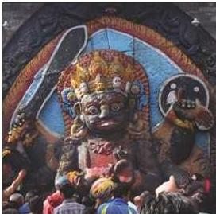
नेपाल परिचय/२७९
तिरको स्वयम्भूको महाकालको मूर्ति, भक्तपुर कला सङ्ग्रहालय, राष्ट्रिय सङ्ग्रहालयमा प्रदर्शित विभिन्न देवीदेवताका मूर्ति, उपत्यकामा यत्रतत्र पाइने मूर्तिहरू नै मध्यकालीन प्रस्तर मूर्तिका उदाहरण हुन् ।
प्रस्तर मूर्तिका विशेषता :
- राम्रो प्रस्तरको छनोट नगर्नु
- तान्त्रिक प्रभाव
- अत्यधिक गरगहनाको प्रयोग
- बुद्धमूर्तिमा तिनचोसे मुकुटको प्रयोग
- चुच्चो नाक
- पातलो ओठ
- लामा आँखा, लामो चिउँडो
- बुद्ध जीवनका घटनालाई एउटै फलकमा उतार्नु
- शारीरिक अनुपात नमिलेका मूर्तिहरूको निर्माण
- कलात्मक प्रभा मण्डल
- ज्वालावलीको प्रयोग
- धर्मनिरपेक्ष कलाकृतिको निर्माण
काठका मूर्ति
छिटो नाश हुने भएकाले काठका अत्यन्त पुराना मूर्तिहरू प्राप्त छैनन् । १५औँ शताब्दी तिरको राष्ट्रिय सङ्ग्रहालयको पूजादेवीको मूर्ति, १५औँ शताब्दीतिरको भक्तपुर काष्ठ सङ्ग्रहालयको नृत्यादेवीको मूर्ति, १५औँ शताब्दीतिरको राष्ट्रिय सङ्ग्रहालयको नृत्यदेवीको मूर्ति (एउटै काठमा बनेको), भक्तपुर काष्ठकला सङ्ग्रहालयका वसुन्धरा, १७औँ शताब्दीको गणेश र नृत्यरूप शिव, महिषमर्दिनी दुर्गा, मारविजयको मूर्ति, भक्तपुर काष्ठकला सङ्ग्रहालय र राष्ट्रिय सङ्ग्रहालय छाउनीका नृत्यदेवीका काष्ठमूर्तिहरू उत्कृष्ट नमुना हुन् । काष्ठकला
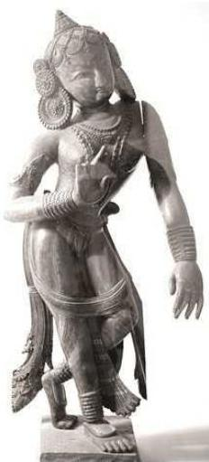
२८०/भैपाल परिचय
दुँडालमा प्रशस्त प्रदर्शन भएको पाइन्छ। मन्दिरको गहनास्वरूप तीन खण्डसम्म कुँदिएका दुँडाल चाँगु, तलेजु, न्यातपोल, कुम्भेश्वर आदिमा पाइन्छ। दुँडालको माथिल्लो हिस्सामा वृक्ष, मध्यभागमा देवता र तल्लो खण्डमा यक्ष, नर-जनावर तथा यौनाभिनयका विभिन्न आसन आदि चार कोणमा सौन्दर्ययुक्त शार्दूल (भेडाको सिङ, सिंहको शरीर) प्रदर्शन गरिन्छ। मन्दिरको द्वारमाथि अर्धवृत्ताकार तोरण बनाई त्यसको मध्यखण्डभित्रको मुख्य देवता, दायाँ-बायाँ गङ्गा, यमुना, मकरको प्रतीक राख्ने गरेको पाइन्छ। काठका कुँदिएका थाम राख्ने प्रचलन न्यातपोल, काष्ठमण्डप (गोरखनाथ) मा प्रयुक्त छ। काष्ठकला सोह्रौ-सत्रौ शताब्दीमा चरम विकासको अवस्थामा थियो। काष्ठमूर्तिका उत्कृष्ट नमुनाहरू मन्दिरमा प्रयुक्त दुँडाल, भ्यामल आदिले प्रस्तुत गर्ने गरेको पाइन्छ। मन्दिरका स्थापत्य कलामा बाहिरी भागमा दुँडालमा शृंगारमय मूर्ति पाइन्छ।
माटोका मूर्ति
नेपाली कलाको सूत्रधार माटोको मूर्ति हो। माटाको मूर्तिका माध्यमिक नमुना पनि प्राप्त छन्। अष्टमातृका (राष्ट्रिय सङ्ग्रहालय) सत्रौ शताब्दीको हो। पशुपति आर्यघाटको अनन्तनारायण विष्णुमूर्ति अठारौ शताब्दीको माटाको मूर्तिको नमुना मानिन्छ। शिवसिंह मल्लको समयमा निर्मित महाबौद्ध मन्दिर (वि.सं. १६४२) मा अनगिन्ती मूर्तिकामूर्तिहरू छन्। ईटजस्तै पोलेर बनाइएका यी माटाका मूर्तिहरू ढुङ्गा जस्तै बलिया, ढलोट जस्तै चिल्ला र स्निग्ध पाइन्छ।
धातुका मूर्ति
प्राचीन समयका धातुका मूर्तिहरू प्राय: उपलब्ध छैनन् तर सान्दर्भिक प्रमाणहरू भने पाइन्छ। तराई क्षेत्रमा प्राप्त प्राचीन मुद्रा, चौगुको विष्णुको मूर्ति, लिच्छविकालका मुद्राहरू, नरेन्द्र देवको पेटीको बुद्धमूर्ति आदि लिच्छविकालको अन्तिम समयदेखिका धातुका मूर्तिहरू हुन्। आठौ, नवौ शताब्दीको बुद्धको मूर्ति, आठौ, नवौ शताब्दीको न्युयोर्कको एक व्यक्तिको निजी सङ्ग्रहमा रहेको वज्रपाणिको मूर्ति, १४औ शताब्दीको पाटन
! 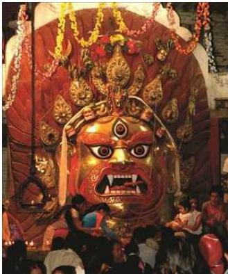
नेपाल परिचय/२८१
हिरण्यवर्ण महाविहारको अवलोकितेश्वरको मूर्ति, १६-१७औँ शताब्दीतिरको राष्ट्रिय सङ्ग्रहालयको नाम सङ्गतिको मूर्ति, पाटन सङ्ग्रहालयमा रहेका ११औँ, १२औँ शताब्दीको इन्द्रको मूर्ति, सन् १०६५ को अर्धनारीश्वर, १२औँ शताब्दीको बुद्धको मूर्ति, १६औँ, १७औँ शताब्दीतिरको राष्ट्रिय सङ्ग्रहालयको महिषसम्बरको मूर्ति आदि नै धातु मूर्तिकलाका उत्कृट नमुना हुन् । मध्यकालमा अत्यधिक धातुका मूर्ति निर्माण भएको पाइन्छ । धातुकलामा दशौँ तथा एघारौँ शताब्दीमा नयाँ युग आएको मान्ने गरिन्छ । मध्यकालका धातुमूर्तिका विशेषता निम्नानुसार पाइन्छ :
क. समानुपातिक तालमान मिलेको शरीर र अवयव ख. ढिल्कएको वा अग्र-अग्र मिलेको शरीर ग. अगाडि र पछाडि दुवैतिर कलायुक्त घ. अत्यधिक वस्त्राभूषण ङ. शिर र हात बढी प्रदर्शन च. अर्ध गोलाकार आँखीभौँ र चुच्चे नाक छ. गोलो अनुहार आदि
७.४.४ नेपाली काष्ठकला र तिनका विशेषता
लिच्छविकालीन काष्ठकला कृतिहरू उपलब्ध छैनन् तर उक्त समयमा दरबार, मन्दिर, विहार, घरहरूमा काठको प्रयोग हुन्थ्यो ।
भ्रूयाल र ढोकाहरू
! 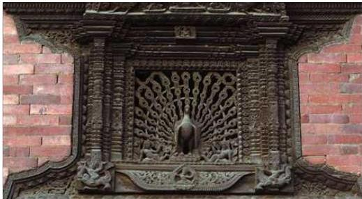
मयूर भ्रूयाल
उपत्यकाका विभिन्न स्मारकमा विभिन्न आकार प्रकारमा काठका कलात्मक भ्रूयालहरू पाइन्छन् । मयूर भ्रूयाल, देसेमरु भ्रूया, कुमारी घरका भ्रूयालहरू, ५५ भ्रूयाले दरबारका
२०२/नेपाल परिचय
भ्याक परिचय/२८३
भ्र्यालहरू आदि काष्ठ कलाकृतिका उत्कृष्ट नमुना हुन् ।
तोरण
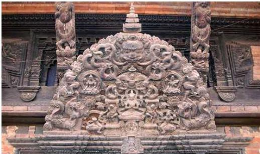
तोरण, गुणाकर महाविहार, छुस्याबहाल
सोहो शताब्दीको इटुमबहालको तोरण, १७औँ शताब्दीको भक्तपुर दरबारको मूलचोकको तोरण, प्रताप मल्लको समयको छुस्या बहालको तोरण, उपत्यकाका अरू मन्दिरहरूमा रहेका तोरण आदि प्रवेशद्वारमाथि रहने अर्ध वृत्ताकार तोरण हुन् ।
टुँडाल
पूर्वमध्यकालदेखिका काष्ठ कलाकृतिहरू प्राप्त भएका छन् । १२/१३औँ शताब्दीतिरका पाटनको महाविहारमा सालभञ्जिका मुद्राका टुँडालहरू, ११औँ शताब्दीका काठमाडौँको इटुमबहालका टुँडाल, १२/१३औँ शताब्दीका पनौती इन्द्रेश्वर मन्दिरका टुँडाल आदि पूर्वमध्यकालीन काष्ठकलाका विशिष्ट नमुना हुन् । मध्यकालीन तले शैलीका मन्दिरलगायतका स्मारकहरूमा प्रयोग भएका टुँडालहरू नै काष्ठकलाका उत्कृष्ट उदाहरणहरू हुन् । स्मारकको छानालाई थाम्न ४५ डिग्रीको कोणमा राखिने सादा वा कलात्मक काठलाई टुँडाल भनिन्छ ।
७.४.५ नेपालमा प्रचलित केही गीत, सङ्गीत र नृत्य कला
भौगोलिक एवम् सांस्कृतिक विविधतायुक्त नेपाली समााजमा चाडपर्व, मौसम, खेतीपाती तथा अन्य अवसरमा प्रचलित गीत तथा नृत्यहरू पाइन्छन् । यिनमा अलग-अलग स्वर, भाका, मिठास र उमङ्ग भरिएका हुन्छन् ।
नेपालमा प्रचलित केही गीत, सङ्गीत तथा नृत्यहरू देहायबमोजिम रहेका छन् :
| मालसिरी | दोहोरी/ जुहारी | मैथिली |
|---|---|---|
| सिल | सोरठी | भोजपुरी |
| तिज/ गौरा | देउडा | मारुनी |
| समला | चुस्का | कौडा |
| भजन चुट्का/ बालन | भोरा | बिरहिनी |
| भैलो/ देउसी | बाह्रमासे | असारे |
| सड्गीनी | भूयाउरे | ठाडोभाका |
| घाटु | तामाङ सेलो | सेपु |
| भक्ति किर्तन | च्याबुङ | भाँगर |
| भिभिया | होली | गाइने गीत |
| छन्ताङ मई | रत्यौली | छ्याली |
-
- +
२८४/ नेपाल परिचय
परिच्छेद : आठ